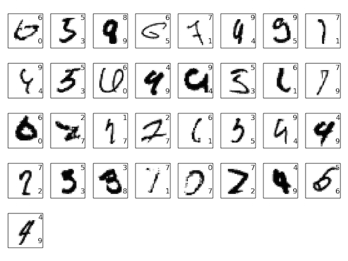
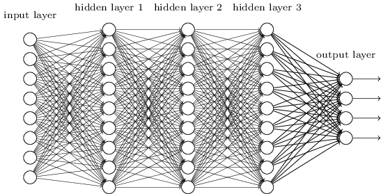
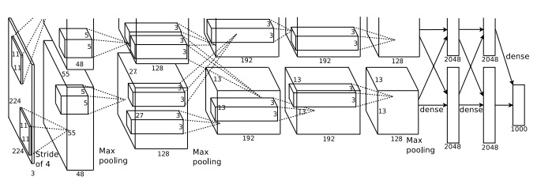

5장에서는 얕은 뉴럴 네트워크shallow neural network보다 딥 뉴럴 네트워크deep neural network가 학습시키기 어렵다고 배웠다. 우리가 딥 네트워크를 학습시킬 수 있다면, 딥 네트워크는 얕은 네트워크보다 훨씬 강력하다는 근거가 있으므로 이는 안타까운 사실이다. 5장의 다룬 소식이 좋지 않더라도 우리는 여기서 멈추지 않을 것이다. 이번 장에서 딥 네트워크를 학습시키는데 사용할 수 있는 기술들을 알아보고 실제로 적용해볼 것이다. 또한 이미지 인식, 음성 인식과 다른 응용들에 딥 네트워크가 최근에 어떻게 쓰이고 있는지 간단하게 살펴보면서, 이해의 영역을 넓혀볼 것이다. 그리고 미래에 뉴럴 네트워크와 인공 지능이 어떻게 될지 간략하게 추측해볼 것이다.
이 장은 다소 길다. 이 장의 내용을 전반적으로 먼저 살펴보자. 각각의 절section은 연관성이 적으므로, 뉴럴 네트워크에 어느 정도 익숙하다면 흥미로운 부분을 골라 읽어도 좋다.
이번 장에서 중요한 부분은 가장 널리 사용되는 딥 네트워크 종류 중 하나인 딥 컨볼루션 네트워크deep convolutional networks이다.
코드를 포함한 자세한 예를 들어서 컨볼루션 네트워크를 이용해 MNIST 데이터 세트의 손글씨 숫자를 분류하는 문제를 풀어볼 것이다.

이 책의 앞부분에서 이 문제를 풀기 위해 사용한 얕은 네트워크를 이용해 컨볼루션 네트워크를 설명하면서 시작하겠다.
많은 반복을 통해서 우리는 점점 더 강력한 네트워크를 구축할 것이다.
그러면서 다음과 같은 강력한 기술들을 살펴볼 것이다: 컨볼루션convolution, 풀링pooling, 얕은 네트워크보다 더 많이 학습시키기 위한 GPU의 사용, (오버 피팅을 피하기 위한) 학습 데이터의 알고리즘적 확장, (오버 피팅을 줄이기 위한) 드랍아웃dropout의 사용, 네트워크의 앙상블ensemble 등등.
결과적으로 인간에 가까운 성능을 낼 수 있을 것이다.
학습하는 동안 보지 못한 이미지인 $10,000$개의 MNIST 테스트 이미지 중에 $9,967$개를 정확하게 맞출 것이다.
잘못 분류한 $33$개의 이미지를 잠깐 살펴보자.
오른쪽 위에 올바른 분류가 나타나 있고, 우리의 프로그램이 분류한 것은 오른쪽 아래에 나타나 있다.

이들 중 대부분은 인간이 분류하는 것과 비슷하다.
예를 들어 가장 위쪽 행에 있는 세번째 이미지를 보자.
내 눈에는 올바른 분류인 "8"보다는 "9"에 가깝게 보인다.
우리가 구현한 네트워크도 이를 "9"라고 생각한다.
이러한 종류의 "오차"는 거의 이해할 수 없으며, 아마도 인정받을 만한 결과이다.
이미지 인식을 위해 네트워크(특히 컨볼루션)를 사용하는 최근의 진보에 관한 조사와 함께 이미지 인식에 대한 논의를 마무리 짓는다.
이 장의 나머지 부분에서는 더 넓고, 개략적인 관점으로 딥 러닝에 대해 논의한다. RNN(Recurrent Neural Networks)와 LSTM(Long short-term memory units)과 같은 뉴럴 네트워크의 다른 모델들과 이러한 모델이 음성 인식, 자연어 처리와 다른 영역의 문제에 어떻게 적용될 수 있는지를 간단하게 살펴볼 것이다. 그리고 뉴럴 네트워크와 딥러닝의 미래에 대해, 의도 기반 사용자 인터페이스intention-driven user interface부터 인공 지능에서 딥러닝의 역할까지 한번 생각해볼 것이다.
이번 장은 책의 앞부분을 바탕으로 하고 있으며, 역전파, 정규화regularization, 소프트맥스 함수 등과 같은 아이디어를 통합하여 사용한다. 하지만 앞장 내용의 모든 것을 자세하게 살펴볼 필요는 없으며, 뉴럴 네트워크에 대한 기본을 다루고 있는 1장을 읽는 것이 도움이 된다. 2장부터 5장에서 배운 개념을 사용할 때는 필요다하다면 링크를 제공할 것이다.
이번 장에서 다음과 같은 내용은 다루지 않는다. 이번 장은 가장 최신의 뉴럴 네트워크 라이브러리에 대한 튜토리얼이 아니다. 가장 최신의 문제를 풀기 위해 수십 개의 층으로 구성된 딥 네트워크를 학습시키지도 않을 것이다. 대신, 딥 뉴럴 네트워크의 핵심 원리를 이해하는 것에 초점을 맞추고 있으며, MNIST 문제에서 간단하고 쉽게 원리를 이해해볼 것이다. 다시 말해, 이번 장은 당신을 이 분야의 최앞단으로 이끄는 것이 아니라 기본적인 사항들에 초점을 두어 폭넓은 이해를 할 수 있도록 준비시키는 것이다.
앞선 장에서 손글씨 숫자 이미지를 꽤 잘 인식하는 뉴럴 네트워크를 학습시켰다.
우리는 인접한 네트워크 층이 서로 완전하게 연결되어 있는fully connected 네트워크를 사용했다.
즉 네트워크에 있는 모든 뉴런은 인접한 층에 있는 모든 뉴런과 연결된다.

특히, 입력 이미지의 각 픽셀에 대해 픽셀의 명암intensity을 입력층에 대응되는 뉴런에 대한 값으로 인코딩encoding했다.
우리가 사용한 $28 \times 28$ 픽셀 이미지에 대해, 네트워크가 $784(= 28 \times 28)$개의 입력 뉴런으로 구성된다는 의미이다.
그런 다음 네트워크의 가중치와 편향을 학습시켜 네트워크의 출력이 입력 이미지를 올바르게 식별하도록 만든다.
이전에 사용한 네트워크는 꽤 잘 동작한다.
MNIST 손글시 숫자 데이터 세트의 학습 데이터와 테스트 데이터를 사용해 $98%$가 넘는 분류 정확도를 얻었다.
그런데 다시 생각해보면 이미지를 분류하기 위해 완전 연결된 층fully-connected layers으로 구성된 네트워크를 사용하는 것은 이상해 보인다.
이러한 네트워크 구조는 이미지의 공간적인spatial 구조를 고려하지 않기 때문이다.
예를 들어, 많이 떨어져 있는 픽셀과 가까이 붙어 있는 픽셀은 똑같이 다룬다.
이러한 공간적인 구조에 대한 개념은 학습 데이터에서 추론해야 한다.
그러면 아무 것도 정해진 것이 없는tabula rasa 네트워크 구조로 시작하는 대신에, 공간적인 구조를 이용해볼 수 있는 구조를 사용한다면 어떨까?
이번 절에서는 컨볼루션 뉴럴 네트워크 convolutional neural network*
컨볼루션 뉴럴 네트워크의 기원은 1970년대로 거슬러 올라간다.
하지만 컨볼루션 네트워크의 현대적인 주제를 다루는 논문은 1998년
Yann LeCunn, Léon Bottou, Yoshua Bengio, and Patrick Haffner의
"Gradient-based learning applied to document recognition"이다.
그 이후에 LeCunn은 컨볼루션 네트워크라는 용어에 대해 흥미로운 말을 했다:
"컨볼루션 네트워크와 같은 모델에서 생물학적인 신경망의 영감은 아주 미약하다.
이 때문에 'convolutional neural nets'이 아니라 'convolutional nets'이라 부른다
노드를 'neuron'이 아니라 'unit'이라 부르는 이유이기도 하다."
이러한 말에도 불구하고, 컨볼루션 네트워크는 이제까지 우리가 배운 뉴럴 네트워크와
같은 아이디어를 많이 사용한다: 역전파, 경사 하강법, 정규화, 비선형 활성화 함수 등을 사용한다.
그러므로 컨볼루션 네트워크를 일종의 뉴럴 네트워크로 다룰 것이다.
이 책에서는 "convolutional neural network"와 "convolutional net(work)"라는 용어를
같은 의미로 사용할 것이다.
또한 "[artificial] neuron"과 "unit"도 구분없이 사용할 것이다.
를 소개한다.
이 네트워크는 특히 이미지를 분류하는데 좋은 특별한 구조를 사용한다.
이 구조를 이용하면 컨볼루션 네트워크는 아주 빠르게 학습할 수 있다.
그리고 이는 이미지를 아주 잘 분류하는 다층 네트워트워크를 학습시키는데 유용하다.
현재, 딥 컨볼루션 네트워크와 약간의 변형은 이미지 인식을 위해 가장 많이 사용되는 뉴럴 네트워크이다.
컨볼루션 뉴럴 네트워크는 다음과 같은 세 가지 기본 아이디어를 사용한다: 국부적 수용 필드local receptive filed, 가중치 공유shared weight, 풀링pooling. 이러한 아이디어를 차례로 살펴보자.
국부적 수용 필드local receptive fields:
이전에 보았던 완전 연결층fully-connected layers에서, 입력은 뉴런의 수직선으로 표현되었다.
컨볼루션 네트워크에서는 입력을 각 값이 $28 \times 28$ 픽셀 명암에 대응하는 $28 \times 28$ 사각형의 뉴런으로 생각하는 것이 유용하다.
여느 때와 같이, 입력 픽셀을 은닉층에 있는 뉴런으로 연결할 것이다.
하지만 모든 입력 픽셀을 모든 은닉 뉴런으로 연결하지는 않을 것이다.
대신에 입력 이미지에서 작고 국부적인 영역만 연결한다.
더 정확하게 말하면, 첫 번째 은닉층에 있는 각 뉴런은 입력 뉴런의 작은 영역, 가령 $25$개의 입력 픽셀에 대응하는 $5 \times 5$ 영역에만 연결된다.
그러므로 특정 은닉 뉴런에 대해 다음과 같은 연결을 만든다.
입력 이미지에서 위와 같은 영역은 은닉 뉴런에 대한 국부적 수용 영역 local receptive filed이라 부른다.
이는 입력 픽셀에 대한 작은 창small window이다.
각 연결은 가중치를 학습한다.
그리고 은닉 뉴런은 전체적인 편향을 학습한다.
위와 같은 특정 은닉 뉴런이 특정한 국부적 수용 필드를 분석하기 위해 학습한다고 생각할 수 있다.
그런 다음 국부적 수용 필드를 전체 이미지에 대해 슬라이드slide시킨다.
첫 번째 은닉층에는 각각의 국부적 수용필드에 대해 서로 다른 은닉 뉴런이 존재한다.
이를 구체적으로 표현하기 위해 왼쪽 위의 모서리에 있는 국부적 수용 필드를 먼저 살펴보자.
그런 다음 국부적 수용 필드를 오른쪽으로 한 픽셀씩(즉 한개의 뉴런씩) 이동시켜 두 번째 은닉 뉴런에 연결하자.
계속해서 같은 방법으로 첫 번째 은닉 층을 구축한다.
$28 \times 28$ 입력 이미지와 $5 \times 5$ 국부적 수용 필드를 사용하면, $24 \times 24$개의 뉴런이 은닉층에 존재함을 기억하자.
국부적 수용 필드가 입력 이미지에 오른쪽 면(혹은 아래쪽)에 닿기 전에 $23$개의 뉴런을 가로질러 이동할 수 있기 때문이다.
국부적 수용 필드를 한 번에 한개의 픽셀씩 이동시켜 보았다.
사실 때로는 서로 다른 보폭 stride length을 사용한다.
예를 들어 국부적 수용 필드를 2픽셀씩 오른쪽(혹은 아래쪽)으로 이동시킬 수도 있으며, 이 경우 보폭은 $2$라고 말한다.
이번 장에서 대부분 보폭은 $1$로 사용하지만 때로는 서로 다른 보폭을 이용해 실험한다*
앞장처럼, 서로 다른 보폭을 이용해 실험한다면,
검증 데이터를 이용해 가장 좋은 성능을 내는 보폭을 선택할 수 있다.
더 자세한 사항은 뉴럴 네트워크에서 하이퍼 파라미터를 어떻게 선택하는지에 대해 이전에 논의한 내용을 보자.
국부적 수용 필드 크기를 선택할 때도 같은 방법을 이용한다.
물론 $5 \timex 5$ 국부적 수용 필드를 사용하는 특별한 이유는 없다.
일반적으로 더 큰 국부적 수용 필드는 입력 이미지가 $28 \times 28$ 픽셀 이미지보다 클 때 유용하다.
.
가중치와 편향 공유shared wights and biases: 각각의 은닉 뉴런은 편향을 가지며, 국부적 수용 필드에 연결되는 $5 \times 5$ 가중치를 가진다고 말했다. 또한 $24 \times 24$ 은닉 뉴런 각각에 대해 같은 가중치와 편향을 사용한다. 즉 $j, k$번째 은닉 뉴런에 대한 출력은 다음과 같다: $$\begin{eqnarray} \sigma\left(b + \sum_{l=0}^4 \sum_{m=0}^4 w_{l,m} a_{j+l, k+m} \right). \tag{125}\end{eqnarray}$$ 여기서, $\sigma$는 앞장에서 사용한 시그모이드 함수와 같은 활성화 함수이다. $b$는 공유되는 가중치 값이다. $w_{l,m}$은 공유되는 가중치 값인 $5 \times 5$ 배열이다. 그리고 위치 $x, y$에 있는 입력 활성화input activation를 $a_{x, y}$로 표현한다.
이는 첫 번째 은닉층에 있는 모든 뉴런이 입력 이미지에서 서로 다른 위치에 있지만 정확히 같은 특징feature을 감지한다는 의미이다*
특징(feature)이라는 개념을 정확하게 정의하지 않았다.
은닉 뉴런이 감지하는 특징을 뉴런을 활성화시키는 일정의 입력 패턴으로 생각해도 된다.
예를 들면, 이미지에서는 선(edge)일 수도 있으며, 다른 모양일 수도 있다.
.
왜 그런지 이해하기 위해, 은닉 뉴런이 특정 국부적 수용 필드에서 수직선을 감지할 수 있는 가중치와 편향을 가정해보자.
이 능력은 이미지의 다른 부분에서도 유용할 것이다.
그러므로 같은 특징 탐지기feature detector를 이미지의 모든 곳에서 사용할 수 있다.
조금 더 추상적으로 이야기해보면, 컨볼루션 네트워크는 이동된 이미지에 대해 잘 적용된다.
가령 고양이 이미지를 조금 이동시켜도, 이는 여전히 고양이다*
사실 MNIST 숫자 분류 문제에서 이미지는 중심에 위치하고 크기는 표준화되어 있다.
그래서 MNIST 실제 상황에서 볼 수 있는 이미지보다 이동 불변성이 적다.
그러나 서로 다른 입력 공간에서 선과 모서리같은 특징을 찾는 것은 여전히 유용하다.
.
이러한 이유로 입력층에서 은닉층으로 이르는 맵을 특징 맵 feature map이라 한다. 특징 맵을 정의하는 가중치를 공유된 가중치 shared weight라 한다. 그리고 특징 맵을 정의하는 편향을 공유된 편향 shared bias라 한다. 공유된 가중치와 편향은 커널 kernel 혹은 필터 filter를 정의한다고 말한다. 사람들은 이런한 용어를 종종 다른 방식으로 사용하기 때문이 여기서 더 자세히 설명하지는 않을 것이다. 오히려 구체적인 예를 살펴보는 것이 좋을지도 모른다.
이때까지 살펴본 네트워크 구조는 단 하나의 국부적인 특징만 감지할 수 있다.
이미지 인식을 하기 위해서는 하나 이상의 특징 맵이 필요하다.
그러므로 완전한 컨볼루션 층은 서로 다른 특징 맵 여러 개로 구성된다.
위 예시에는 3개의 특징 맵이 있다.
각 특징 맵은 $5 \times 5$의 공유된 가중치 집합과 하나의 공유된 편향으로 정의된다.
그 결과, 네트워크의 $3$개의 서로 다른 특징을 젠체 이미지에 대해 감지할 수 있다.
위 그림에서는 단지 간단하게 나타내기 위해 3개의 특징 맵만 사용했다.
하지만 실제로 컨볼루션 네트워크는 (훨씬) 더 많은 수의 특징 맵을 사용한다.
초창기 컨볼루션 네트워크 중 하나인 LeNet-5는 $5 \times 5$ 국부 수용 필드에 연결되는 6개의 특징 맵을 사용해 MNIST 숫자를 인식했다.
그러므로 위의 예는 실제로 LeNet-5와 매우 유사하다.
이 장의 뒷부분에서 다룰 예시에서는 $20$개와 $40$개의 특징 맵으로 구성된 컨볼루션 층을 사용할 것이다.
학습된 몇 가지 특징feature을 한번 살펴보자*
우리가 학습시킨 마지막 컨볼루션 네트워크의 특징 맵이다.
.

$20$개의 이미지는 $20$개의 서로 다른 특징 맵(또는 필터 또는 커널)에 대응된다.
각 맵은 $5 \times 5$ 블록 이미지로 나타나며, 국부 수용 영역의 $5 \times 5$ 가중치에 대응된다.
하얀색에 가까운 블록은 더 작은 (일반적으로 음수인) 가중치를 의미하며, 이 특징 맵은 대응하는 입력 픽셀에 대해 반응을 덜한다.
어두운 블록은 더 큰 가중치를 의미하며, 이 특징 맵은 대응하는 입력 픽셀에 더 크게 반응한다.
대략적으로 말해서, 위의 이미지는 컨볼루션 층이 반응하는 특징의 종류를 보여준다.
그러면 이 특징 맵에서 어떤 결론을 낼 수 있을까? 랜덤이라고 생각했지만 여기에 공간적인 구조가 있는 것은 분명하다. 많은 특징들은 밝거나 어두운 부분 영역sub-region을 분명히 가진다. 이는 네트워크가 공간 구조와 관련된 어떤 것을 학습한다는 의미이다. 하지만 이를 제외하고는 특징 감지기feature detector가 무엇을 학습하는지 알아내기는 어렵다. 분명, 우리는 지금 이미지 인식에서 전통적인으로 되는 접근 방법인 가버 필터Gabor filter를 배우고 있는 것은 아니다. 사실 컨볼루션 네트워크가 학습하는 특징feature을 이해하는 연구들이 많이 있다. 이러한 연구들을 따라가보고 싶다면, Matthew and Fergus (2013)의 논문 Visualizing Understnading Convolutional Networks를 읽어보길 바란다.
가중치와 편향을 공유해서 얻을 수 있는 가장 큰 이점은 컨볼루션 네트워크에 포함되는 파라미터 수를 상당히 줄일 수 있다는 것이다. 각 특징 맵에 대해 $25 = 5 \times 5$개의 공유 가중치와 하나의 공유 편향이 필요하다. 그러므로 특징 맵은 $26$개의 파라미터가 필요하다. $20$개의 특징 맵으로 이루어져 있다면, 컨볼루션 층을 정의하는데 $20 \times 26 = 520$개의 파라미터가 필요하다. 비교를 위해, 책의 앞부분에서 예시로 많이 사용했던 $784 = 28 \times 28$개의 입력 뉴런과, $30$개의 은닉 뉴런으로 구성된 완전 연결 층을 생각해보자. 여기서는 전체적으로 $784 \times 30$개의 가중치와 $30$개의 편향이 필요하며, 총 $23,550$개의 파라미터가 필요하다. 즉, 완전 연결 층은 컨볼루션 층보다 $40$배 많은 수의 파라미터를 가진다.
물론, 두 가지 모델은 근본적으로 다르기 때문에 직접적으로 파라미터 수를 비교할 수는 없다. 하지만 직관적으로 컨볼루션 층의 이동 불변성translation invariance을 이용하면 파라미터의 수를 줄여서 완전 연결 모델fully-connected model과 같은 성능을 낼 수 있을 것 같다. 이는 컨볼루션 모델에서 학습 속도가 빨라지는 결과를 가져오며, 궁극적으로 컨볼루션 층을 이용해 딥 네트워크를 구축하는데 도움이 된다.
컨볼루셔널 convolutional이라는 이름은 컨볼루션 convolution이라 알려진 식 (125) $$\begin{eqnarray} \sigma\left(b + \sum_{l=0}^4 \sum_{m=0}^4 w_{l,m} a_{j+l, k+m} \right) \nonumber\end{eqnarray}$$ 의 연산에서 따온 것이다. 조금 더 정확하게 말하면, 그 식은 종종 $a^1 = \sigma(b + w * a^0)$으로도 쓰며, 여기서 $a^1$은 하나의 특징 맵에서 나오는 출력 활성화output activations의 집합이다. $a^0$는 입력 활성화의 집합이고 $*$은 컨볼루션 연산convolution operation이라 부른다. 컨볼루션에 대해 수학적으로 깊게 다루지 않을 것이므로 이러한 연관 관계에 대해 걱장할 필요는 없다. 하지만 용어의 기원은 알아둘 필요가 있다.
풀링 레이어pooling layers: 방금 이야기한 컨볼루션 층 이외에도 컨볼루션 뉴럴 네트워크는 풀링 층 pooling layers를 포함한다. 풀링 층은 보통 컨볼루션 층 바로 다음에 사용한다. 풀링 층은 컨볼루션 층의 출력 정보를 단순화하기 위해 사용한다.
자세히 말하면, 풀링 층은 컨볼루션 층에서 나오는 각각의 특징 맵*
여기서 명명법을 엄격히 사용하지 않았다.
특히 "특징 맵"은 컨볼루션 층이 계산하는 함수의 의미로 사용하지 않았다.
대신 은닉 뉴런의 활성화를 의미한다.
이러한 명명법의 남용은 연구 논문에서 흔히 볼 수 있다.
을 가지고 압축된 특징 맵condensed feature map을 준비한다.
예를 들어, 풀링 층의 각 단위unit는 (가령) 이전 층에 있는 $2 \times 2$ 뉴런 영역을 요약한다.
구체적인 예를 살펴보면, 풀링에서 흔히 사용하는 한 가지 방법은 최댓값 풀링 max-pooling이다.
최댓값 풀링에서, 풀링 단위는 아래 그림과 같이 단순히 $2 \times 2$ 입력 영역에서 단순히 활성화 최댓값을 출력한다.
컨볼루션 층에서 $24 \times 24$ 뉴런이 출력되므로, 풀링을 한 다음에는 $12 \times 12$ 뉴런을 얻는다.
위에서 언급한 것처럼, 컨볼루션 층은 보통 하나 이상의 특징 맵을 포함한다.
우리는 최댓값 풀링을 각각의 특징 맵에 적용한다.
그러므로 세 개의 특징 맵이 있을 때, 컨볼루션과 최댓값 풀링 층을 합쳐 그리면 아래와 같다.
주어진 특징feature이 이미지 영역의 어디에서도 발견될 수 있는지 네트워크에게 묻는 방법을 최댓값 풀링이라고 생각할 수 있다.
그런 다음이 정확한 위치 정보를 잃어 버린다.
일단 하나의 특징이 발견되면, 그 특징의 정확한 위치는 다른 특징과의 상대적인 위치만큼 중요해지지 않는다.
가장 큰 이점은 특징을 더 적게 모아서many fewer pooled feature 이후의 층에서 필요한 파라미터 수를 줄일 수 있다.
풀링을 하기위해 최댓값 풀링 외에 다른 방법들도 사용한다. 흔히 사용하는 다른 접근법은 L2 풀링 L2 pooling이라 부르는 기술이다. 이 방법에서는 $2 \times 2$ 뉴런 영역에서 활성화 최댓값을 취하지 않고, $2 \times 2$ 영역에 있는 활성화를 제곱한 값을 합한 다음에, 제곱근을 계산하여 값을 얻는다. 세부 사항은 다르지만 최댓값 풀링과 비슷하게 직관적으로 이해할 수 있다: L2 풀링도 컨볼루션 층의 정보를 압축하는 방법이다. 실제로 두 기술은 흔히 사용되고 있다. 그리고 다른 종류의 풀링 연산을 사용하기도 한다. 정말로 성능을 최적화하고 싶다면, 풀리에 대한 여러 가지 방법을 비교하기 위해 검증 데이터를 사용하여 잘 동작하는 접근법을 선택하면 된다. 하지만 이 책에서는 그러한 세부적인 최적화는 신경쓰지 않을 것이다.
요약:
이제 아이디어를 모두 하나로 합쳐서 완전한 컨볼루션 뉴럴 네트워크를 만들어 보자.
이때까지 봐었던 것과 비슷한 구조이며, MNIST 숫자에 대해 가능한 $10$개의 값에 대응되는 출력 뉴런 $10$개로 구성된 층을 추가했다.
네트워크는 $28 \times 28$ 입력 뉴런으로 시작하며, 이는 MNIST 이미지에 대한 픽셀 명암을 인코딩한다.
그 다음 컨볼루션 층이 있으며, $5 \times 5$ 국부 수용 필드와 $3$개의 특징 맵을 사용한다.
그 결과 $3 \times 24 \times 24$ 은닉 특징 뉴런hidden feature neuron 층이 생긴다.
그 다음 최댓값 풀링 층이 나오며, $3$개의 특징 맵 각각에 대해 $2 \times 2$ 영역에 적용된다.
그 결과 $3 \times 12 \times 12$ 은닉 특징 뉴런 층이 나온다.
네트워크에서 마지막 층은 완전 연결 층fully-connected layer이다. 즉, 이 층은 최댓값 풀링 층에서 나온 모든 뉴런을 $10$개의 출력 뉴런에 모두 연결한다. 이 완전 연결 구조는 앞장에서 사용했던 것과 같다. 하지만 위의 그림에서는 간단하게 나타내기 위해 모든 연결을 표시하지 않고 하나의 화살표를 사용했다. 물론 연결선을 쉽게 상상해볼 수 있다.
이 컨볼루션 구조는 앞장에서 다루었던 구조와는 꽤 다르다. 하지만 전체적인 그림은 비슷하다: 네트워크는 많은 단위unit로 이루어져 있고, 네트워크의 행동은 가중치와 편향이 결정한다. 그리고 전반적인 목표도 여전히 같다: 네트워크의 가중치와 편향을 학습시키기 위해 학습 데이터를 사용하며, 네트워크가 입력 숫자를 잘 분류하도록 만든다.
특히, 책의 앞부분에서 본 것처럼 확률적 경사 하강법과 역전파를 이용해 네트워크를 학습시킬 것이다. 이는 이전에 봤던 것과 정확히 같은 방법으로 진행된다. 하지만 역전파 과정은 약간 수정해야한다. 이전에 완전 연결 층으로 이루어진 네트워크에 대해 역전파를 유도했기 때문이다. 다행스럽게도, 컨볼루션과 최댓값 풀링 층에 대한 유도를 하는 것은 직관적이다. 자세한 사항을 이해하고 싶다면, 아래의 문제를 풀어보자. 앞에서 살펴본 역전파 유도를 완전히 이해하지 못했다면, 이 문제를 해결하는데 꽤 시간이 걸릴 수 있다.
컨볼루션 네트워크에서의 역전파 완전 연결 층으로 이루어진 네트워크에 대한 역전파의 핵심 식은 (BP1) $$\begin{eqnarray} \delta^L_j = \frac{\partial C}{\partial a^L_j} \sigma'(z^L_j) \nonumber\end{eqnarray}$$ -(BP4) $$\begin{eqnarray} \frac{\partial C}{\partial w^l_{jk}} = a^{l-1}_k \delta^l_j \nonumber\end{eqnarray}$$ 이다. 위에서 논의했던 네트워크처럼 컨볼루션 층, 최댓값 풀링 층, 그리고 완전 연결된 출력 층으로 이루어진 네트워크가 있다고 가정하자. 역전파 식을 어떻게 수정해야 할까?
컨볼루션 뉴럴 네트워크의 핵심 아이디어를 살펴보았다.
실제로 컨볼루션 뉴럴 네트워크가 어떻게 동작하는지, 컨볼루션 네트워크를 구현하여 MNIST 숫자 분류 문제에 적용해 보면서 살펴보도록 하자.
이를 위해 사용할 프로그램은 network3.py이며, 앞장에서 개발한 network.py와 netwrok2.py를 개선한 버전이다*
network3.py는 컨볼루션 뉴럴 네트워크(주로 LeNet-5의 구현)에 대한
Misha Denil의 드랍아웃 구현과 Chris Olag의
Theano 라이브러리 문서에서 아이디어를 얻었다.
.
GitHub을 통해 코드를 볼 수 있다.
이 다음 절에서 network3.py에 대한 코드를 살펴볼 것이다.
이번 절에서는 network3.py를 라이브러리로 사용하여 컨볼루션 네트워크를 구착해볼 것이다.
프로그램 network.py와 network2.py는 파이썬과 행렬 라이브러리 Numpy를 이용하여 구현되어 있다.
이 프로그램은 역전파, 확률적 경사 하강법과 같은 자세한 사항들을 구현하였다.
하지만 이러한 세부적인 상황을 이해하고 있기 때문에, network3.py에 대해 머신 러닝 라이브러리인 Theano를 사용할 것이다*
James Bergstra, Olivier Breuluex, Frederic Bastien, Pascal Lamblin,
Ravzan Pascanu, Guillaume Desjardins, Joseph Turian, David Warde-Farley,
and Yoshua Bengi (2010)의 Theano: A CPU and GPU Math Expression Compiler in Python을 보자.
Theano는 Pylearn2와 Keras 뉴럴 네트워크 라이브러리의 기본 토대이다.
이 글을 쓰는 현 시점에서 또다른 인기있는 뉴럴 네트워크 라이브러리는 Caffe와 Torch이다.
.
Theano를 이용하면 포함된 모든 매핑을 자동으로 계산할 수 있으므로 컨볼루션 뉴럴 네트워크에 대한 역전파를 쉽게 구현할 수 있다.
또한 Theano는 우리가 이전에 사용한 코드(이때 사용한 코드는 이해를 위해 쉽게 작성했으며 빠르지 않다)보다 꽤 빠르며, 덕분에 더 복잡한 네트워크를 학습시킬 수 있다.
특히 Theano의 가장 큰 특징은 코드를 CPU 또는 이용할 수 있다면 GPU에서 동작시킬 수 있다.
GPU에서 동작시키면 속도를 상당히 높일 수 있으며, 더욱 복잡한 네트워크를 실용적으로 학습시킬 수 있다.
직접 해보고 싶다면 Theano를 설치해야 한다.
프로젝트 홈페이지에 있는 인스트럭션을 따라 Theano를 설치해보자.
예시는 Theano 0.6을 이용해 동작시켰다*
이 장을 작성할 때 Theano의 현재 버전은 0.7로 바뀌었다.
예시를 Theano 0.7에서 다시 동작시켜 보았을 때
이 책에 표시한 결과와 매우 비슷한 결과를 얻었다.
.
어떤 예시는 GPU 없이 Mac OS X Yosemite에서 동작시켰다.
어떤 예는 NVIDIA GPU와 함께 Ubuntu 14.04에서 동작시켰다.
어떤 실험은 양쪽 모두에서 실행시켜 보았다.
network3.py 코드를 실행시키기 위해서는 network3.py 코드에서 GPU 플래그flag를 True 또는 False로 세팅해야 한다.
이 외에, Theano를 GPU에서 동작시키기 위해서는 이 인스트럭션 참고하자.
Google을 이용해 쉽게 찾을 수 있는 튜토리얼도 도움이 될 것이다.
로컬에서 사용가능한 GPU가 없다면 Amazon Web Services EC2 G2 인스턴스를 고려해보자.
GPU를 사용하더라도 코드를 실행하는데 시간이 걸린다.
GPU에서 복잡한 실험을 구동하는데 수일이 걸릴 수도 있다.
앞장에서 말한 것처럼, 코드를 동작시켜 놓고 책을 계속 읽으면서 코드의 출력이 나오는지 확인해보자.
GPU를 사용한다면, 더 복잡한 실험에 대해 학습 에폭training epochs 수를 줄이거나 아예 빼버리고 싶을 수도 있다.
$100$개의 은닉 뉴런을 포함하는 하나의 은닉층으로 구성되는 얕은 구조를 먼저 살펴보자.
$60$ 에폭epoch동안 학습시킬 것이며, 학습률 $\eta = 0.1$, 미니 배치 크기는 $10$을 사용하고 정규화는 사용하지 않을 것이다*
실험에 대한 코드는 단지 이번 절에서 논의한 것을 따라한 것이다.
이번 절 전반에 걸쳐 학습 에폭을 명시할 것이다.
어떻게 학습시키는지 명확하게 하려고 이렇게 했다.
실제로 조거 멈춤을 사용해 검증 세트에 대한 정확도롤 쫓아가 보고
검증 정확도가 믿을만 하면 개선을 멈추는 것이 좋다.
.
>>> import network3
>>> from network3 import Network
>>> from network3 import ConvPoolLayer, FullyConnectedLayer, SoftmaxLayer
>>> training_data, validation_data, test_data = network3.load_data_shared()
>>> mini_batch_size = 10
>>> net = Network([
FullyConnectedLayer(n_in=784, n_out=100),
SoftmaxLayer(n_in=100, n_out=10)], mini_batch_size)
>>> net.SGD(training_data, 60, mini_batch_size, 0.1,
validation_data, test_data)test_data에 대한 분류 정확도이며, validation_data에 대해 가장 좋은 분류 정확도를 얻는 학습 에폭epoch에서 계산되었다.
언제 테스트 정확도를 평가할지 결정하기 위해 검증 데이터를 사용하면 테스트 데이터에 대한 오버피팅을 피할 수 있다.
이러한 과정을 아래에서도 사용할 것이다.
네트워크의 가중치와 편향은 무작위로 초기화되므로 당신의 결과는 다소 다를 수 있다*
사실 이 실험에서 이 구조를 이용해 네트워크를 학습 시키기 위해 세 번 동작시켜 보았다. 이 $97.80$%의 정확도는 3장에서 비슷한 네트워크 구조와 학습 하이퍼 파라미터를 이용해 얻은 정확도 $98.04%$와 비슷하다. 특히 두 가지 예시 모두 $100$개의 은닉 뉴런을 포함하는 하나의 은닉층으로 구성된 얕은 네트워크를 사용했다. 두 가지 모두 $60$ 에폭epoch동안 학습시켰으며, 미니 배치 크기는 $10$, 학습률은 $\eta = 0.1$로 하였다.
하지만 이전에 사용한 네트워크에는 두 가지 차이점이 있다. 먼저 이전에 사용한 네트워크는 정규화를 통해 오버피팅 효과를 감소시켰다. 이 장의 네트워크를 정규화하면 정확도는 향상되지만 그 정도가 작으므로, 정규화는 당분간 신경쓰지 않을 것이다. 두 번째, 이전에 사용한 네트워크에서 마지막 층은 시그모이드 활성화와 교차 엔트로피 비용 함수를 사용했지만 이 장에서 사용하는 네트워크는 소프트맥스 층을 마지막 층으로 사용하고 로그우도log-likelihood 비용 함수를 사용한다. 3장에서 설명한 것처럼 이는 큰 변화가 아니다. 어떤 심오한 이유가 있어서 이렇게 바꾼 것은 아니다. 소프트맥스와 로그우도 비용을 같이 사용하는 것이 현대적 이미지 분류 네트워크에서 흔히 사용하는 방법이기 때문이다.
더 깊은 네트워크 구조를 이용해 이 결과보다 나은 결과를 얻을 수 있을까?
컨볼루션 층을 네트워크의 시작 부분에 넣어보자.
$5 \times 5$ 국부 수용 필드, 보폭stride length은 1, $20$개의 특징 맵을 사용할 것이다.
또한 $2 \times 2$ 풀링 윈도우를 이용해 특징을 결합하는 최댓값 풀링 층을 삽입할 것이다.
그러면 전체적인 네트워크 구조는 이전 절에서 본 것과 거의 같아진다.
하지만 여기서는 추가적으로 완전 연결 층을 사용할 것이다.

이 구조에서 컨볼루션과 풀링 층이 입력 학습 이미지에서 국부 공간 구조를 학습하고 완전 연결 층이 더 추상적인 수준에서 학습하여 전체 이미지에 대한 전역 정보를 통합한다고 생각할 수 있다.
이는 컨볼루션 뉴럴 네트워크에서 흔한 패턴이다.
이러한 네트워크를 학습시키고, 성능은 어떤지 살펴보자*
여기서도 미니 배치 크기는 10으로 사용했다.
이전에 언급한 것처럼 미니 배치 크기를 더 크게해서 학습 속도를 올릴 수 있다.
앞장에서 한 실험과 일관성을 유지하기 위해 같은 미니 배치 크기를 계속 사용할 것이다.
.
>>> net = Network([
ConvPoolLayer(image_shape=(mini_batch_size, 1, 28, 28),
filter_shape=(20, 1, 5, 5),
poolsize=(2, 2)),
FullyConnectedLayer(n_in=20*12*12, n_out=100),
SoftmaxLayer(n_in=100, n_out=10)], mini_batch_size)
>>> net.SGD(training_data, 60, mini_batch_size, 0.1,
validation_data, test_data)
이 네트워크의 분류 정확도는 $98.78$%이며, 이전의 어떤 결과보다도 상당한 개선을 이루어 냈다. 실제로 오차율을 3배 이상 줄였으며, 이는 상당한 진척이다.
네트워크 구조를 명시할 때, 컨볼루션과 풀링 층을 하나의 층으로 다루었다.
이들을 별개의 층으로 표시하든 하나의 층으로 표시하든 상관없다.
network3.py에서는 하나의 층으로 다루어 코드를 더 간단하게 만들었다.
하지만 원한다면 netwrok3.py를 수정해 별개의 층으로 쉽게 나타낼 수 있다.
완전 연결 층을 생략하고 단지 컨볼루션, 풀링 층과 소프트 맥스 층을 사용하면 어떤 분류 정확도가 나오는가? 완전 연결 층을 포함하는 것이 유용한가?
분류 정확도 $98.78$%를 향상시킬 수 있을까?
두 번째 컨볼루션-풀링 층을 포함시켜 보자. 기존에 있던 컨볼루션-풀링 층과 완전 연결 층 사이에 이를 넣어볼 것이다. 다시 한번 $5 \times 5$ 국부 수용 영역과 $2 \times 2$ 풀링을 사용해볼 것이다. 이전과 비슷한 하이퍼 파라미터를 이용해 학습시키면 어떤 일이 일어나는지 살펴보자:
>>> net = Network([
ConvPoolLayer(image_shape=(mini_batch_size, 1, 28, 28),
filter_shape=(20, 1, 5, 5),
poolsize=(2, 2)),
ConvPoolLayer(image_shape=(mini_batch_size, 20, 12, 12),
filter_shape=(40, 20, 5, 5),
poolsize=(2, 2)),
FullyConnectedLayer(n_in=40*4*4, n_out=100),
SoftmaxLayer(n_in=100, n_out=10)], mini_batch_size)
>>> net.SGD(training_data, 60, mini_batch_size, 0.1,
validation_data, test_data)
다시 한번 성능을 개선하였다. 이제 분류 정확도는 $99.06$%이다.
이 시점에서 자연스레 두 가지 의문을 품을 수 있다. 첫 번째 의문은 다음과 같다: 두 번째 컨볼루션-풀링 층을 적용하는 것은 도대체 무슨 의미일까? 사실, 우리는 두 번째 컨볼루션-풀링 층을 입력으로 $12 \times 12$ "이미지"를 받으며, 이때 이미지의 "픽셀"은 원본 이미지에서 특정한 특징의 존재 여부를 나타낸다고 볼 수 있다. 그러므로 이 층은 입력으로 입력 이미지의 원본 버전을 갖는다고 생각할 수 있다. 그 버전은 추상화되고, 압축된 것이지만 여전히 많은 공간 구조를 가지기 때문에 두 번째 컨볼루션-풀링 층을 사용하는 건 말이 된다.
이는 만족스럽고 그럴듯한 관점이지만, 또 다른 의문을 불러 일으킨다.
이전 층의 출력은 $20$개의 특징 맵을 포함하므로, 두 번째 컨볼루션-풀링 층의 입력은 $20 \times 12 \times 12$이다.
이는 컨볼루션-풀링 층에 하나의 이미지가 아니라, 별개의 $20$개 이미지를 입력하는 것과 같다.
첫 번째 컨볼루션-풀링 층의 경우와는 다르다.
두 번째 컨볼루션-풀링 층에 있는 뉴런은 이렇게 많은 입력 이미지에 대해 어떻게 반응해야 할까?
우리는 이 층에 있는 뉴런이 국부 수용 영역에 있는 모든 $20 \times 5 \times 5$ 입력 뉴런에서 학습하도록 만들 것이다.
즉, 두 번째 컨볼루션-풀링 층에 있는 특징 감지기는 이전 층의 모든 특징에 접근하며, 특정한 국부 수용 영역 안에서만 접근할 수 있다*
입력 이미지가 컬러 이미지일 경우, 이 문제는 첫 번째 층에서 발생할 것이다.
이 경우 각 픽셀에 대해 3개의 입력 특징을 가지며, 이는 입력 이미지의 빨강, 초록, 파랑 채널에 대응한다.
그러므로 특징 감지기가 모든 색깔 정보에 접근하는 것을 허용하며, 주어진 국부 수용 영역 안에서만 접근할 수 있다.
.
tanh 활성화 함수 사용하기 책의 앞부분에서 tanh 함수가 시그모이드 함수보다 더 나은 활성화 함수일 수도 있다고 언급한 적이 있다. 우리가 이미 시그모이드 함수를 이용해 좋은 성능을 냈기 때문에 tanh 함수에 대해서는 다루지 않았다. 하지만 이제 tanh를 활성화 함수로 하여 몇 가지 실험을 해보자. 컨볼루션 층과 완전 연결 층의 활성화 함수가 tanh인 네트워크를 학습시켜 보자. 시그모이드 네트워크를 실험할 때와 같은 하이퍼 파라미터를 사용하며, $60$에폭epoch 대신에 $20$ 에폭epoch동안 학습시킨다. 네트워크의 성능은 얼마나 좋을까? $60$ 에폭동안 학습시킨다면 어떨까? tanh와 시그모이드로 이루어진 네트워크에 대해 $60$ 에폭동안 학습시키면서 에폭당 검증 정확도는 어떻게 되는지 그래프로 그려보자. 당신의 결과가 내 것과 비슷하다면 tanh 네트워크가 학습을 좀 더 빨리하지만, 최종 정확도는 비슷하다는 결론을 얻을 것이다. tanh 네트워크가 왜 학습을 빨리하는지 설명할 수 있는가? 학습률이나 다른 값을 조정하여 시그모이드와 비슷한 학습 속도를 얻을 수 있는가?* $\sigma(z) = (1+\tanh(z/2))/2$을 rescaling하여 얻을 수 있을 것이다. tanh가 시그모이드보다 성능이 좋은 하이퍼 파라미터와 네트워크 구조를 찾아보자. 주의: 이는 주관식 문제이다. 개인적으로 나는 tanh로 바꿔서 얻을 수 있는 큰 이점을 발견하지 못했다. 그렇게 많이 실험해 본 것은 아니므로, 당신은 찾을 수도 있다. 어떤 경우에는 수정된 선형rectified linear 활성화 함수를 사용하면 이점이 있으므로, tanh에 대해 더 이상 깊게 살펴보지 않을 것이다.
수정된 선형 유닛 사용하기using rectified linear units:
우리가 이때까지 개발한 네트워크는 사실 1998년 논문*
Yann LeCun, Léon Bottou, Yoshua Bengio, and Patrick Haffner (1998)
"Gradient-based learning applied to document recognition"
세부사항은 많이 다르지만, 넓게 보면 우리가 사용한 네트워크는 이 논문에서 사용된 네트워크와 비슷하다.
에서 사용된 네트워크 중 하나의 변형이다.
이 논문에서는 MNIST 문제를 도입하였고, LeNet-5라 알려진 네트워크를 도입했다.
이는 이후의 실험에 대해 좋은 토대를 마련하였고, 이해와 직관을 구축하는 기반이 되었다.
특히, 결과를 향상시키기 위해 네트워크를 변형할 수 있는 많은 방법이 생겼다.
이제, 시그모이드 활성화 함수를 사용하는 대신에 수정된 선형 유닛rectified linear unit을 사용하도록 뉴런을 바꿔보자. 즉, 우리는 활성화 함수로 $f(z) \equiv \max(0, z)$을 사용할 것이다. $60$ 에폭epoch동안 학습시킬 것이고, 학습률은 $\eta = 0.03$을 사용한다. 정규화 파라미터 $\lambda = 0.1$를 이용한 L2 정규화l2 regularization을 이용하면 도움이 된다는 것을 발견했다.
>>> from network3 import ReLU
>>> net = Network([
ConvPoolLayer(image_shape=(mini_batch_size, 1, 28, 28),
filter_shape=(20, 1, 5, 5),
poolsize=(2, 2),
activation_fn=ReLU),
ConvPoolLayer(image_shape=(mini_batch_size, 20, 12, 12),
filter_shape=(40, 20, 5, 5),
poolsize=(2, 2),
activation_fn=ReLU),
FullyConnectedLayer(n_in=40*4*4, n_out=100, activation_fn=ReLU),
SoftmaxLayer(n_in=100, n_out=10)], mini_batch_size)
>>> net.SGD(training_data, 60, mini_batch_size, 0.03,
validation_data, test_data, lmbda=0.1)
분류 정확도는 $99.23$%가 나왔다. 이는 시그모이드의 결과인 99.06보다 약간 개선된 정도이다. 하지만 내가 해본 실험에서, 수정된 선형 단위를 이용한 네트워크가 시그모이드 활성화 함수를 기반으로 하는 네트워크 성능을 앞선다는 사실을 발견했다. 이는 이 문제에 대해서 수정된 선형 유닛으로 옮겨가야 하는 큰 이유이다.
수정된 선형 활성화 함수가 시그모이드나 tanh 함수보다 나은 이유는 무엇일까?
현재로선 우리는 이 질문에 대한 답을 거의 이해하지 못하고 있다.
실제로 수정된 선형 단위는 지난 몇 년동안 널리 이용되기 시작했다.
최근의 이런 추세는 경험적인empirical 이유 때문이다:
몇몇 사람들이 단지 감hunch이나 경험적인 주장을 근거로 수정된 선형 단위를 사용했다*
시그모이드 뉴런과 달리 $\max(0, z)$은 아주 큰 $z$에서 포화하지 않기 때문이라는 의견이 많다.
이 때문에 수정된 선형 단위는 계속 학습할 수 있다.
이러한 주장은 정당해 보이지만, 논란의 여지는 있다.
포화(saturation)과 과련되 사항은 2장을 살펴보자.
.
수정된 선형 단위는 분류하는데 좋은 결과를 냈고, 실용적으로 사용되고 있다.
이상적인 세계에서는 어떤 응용에 어떤 활성화 함수를 사용해야하는지에 대한 이론이 존재한다.
하지만 현재 우리는 그러한 이상세계와는 동떨어진 세상에 살고 있다.
또 다른 활성화 함수를 이용해 더 나은 개선을 이룬다고 해도 놀랍지 않을 것이다.
그리고 머지않아 활성화 함수에 대한 강력한 이론이 발견될 것이라 기대한다.
현재, 주먹구구식으로 경험에 의존해 이해하고 있다.
학습 데이터 늘리기expanding the training data:
결과를 향상시킬 수 있는 또 다른 방법은 학습 데이터를 늘리는 것이다.
학습 데이터를 늘리는 간단한 방법 중 하나는 위쪽이나 아래쪽, 혹은 오른쪽이나 왼쪽으로 한 픽셀씩 학습 이미지를 옮기는 것이다.
쉘 프롬프트에서 expand_data.py 프로그램을 실행해 이를 해볼 수 있다.
$ python expand_mnist.py이 프로그램을 실행하면 $50.000$개의 MNIST 학습 이미지를 받아, $250,000$개로 늘릴 준비를 한다. 그런 다음, 이 학습 이미지를 이용해 네트워크를 학습시킨다. 위와 같은 네트워크를 사용할 것이며, 수정된 선형 단위를 이용한다. 처음 실험에서, 학습 에폭epoch 수를 줄였다. $5$배 많은 데이터를 이용해 학습시키기 때문에, 이는 당연한 이야기일 수 있다. 하지만 사실 데이터를 늘리면 오버피팅 효과를 상당히 많이 줄일 수 있다. 그러므로 몇번 실험한 뒤에, 결국 $60$ 에폭epoch동안 학습시켰다. 어쨌든, 다음과 같이 학습시켜 보자.
>>> expanded_training_data, _, _ = network3.load_data_shared(
"../data/mnist_expanded.pkl.gz")
>>> net = Network([
ConvPoolLayer(image_shape=(mini_batch_size, 1, 28, 28),
filter_shape=(20, 1, 5, 5),
poolsize=(2, 2),
activation_fn=ReLU),
ConvPoolLayer(image_shape=(mini_batch_size, 20, 12, 12),
filter_shape=(40, 20, 5, 5),
poolsize=(2, 2),
activation_fn=ReLU),
FullyConnectedLayer(n_in=40*4*4, n_out=100, activation_fn=ReLU),
SoftmaxLayer(n_in=100, n_out=10)], mini_batch_size)
>>> net.SGD(expanded_training_data, 60, mini_batch_size, 0.03,
validation_data, test_data, lmbda=0.1)
늘어난 학습 데이터를 이용해, $99.37$%의 학습 정확도를 얻었다.
이 사소한 변화가 상당한 개선을 불러 일으켰다.
실제로 이전에 논의한 것처럼, 데이터를 늘리는 아이디어를 더 적극적으로 사용할 수 있다.
이전의 논의한 내용을 잠깐 살펴보자.
2003년 Simard, Steinkraus and Platt은*
Best Practices for Convolutional Neural Networks Applied to Visual Document Analysis,
by Patrice Simard, Dave Steinkraus, and John Platt (2003).
MNIST 분류 성능을 99.6%로 향상 시켰다.
우리가 사용한 네트워크와 비슷한 구조를 사용했다.
두 개의 컨볼루션-풀링 층과, 그 뒤에 100개의 뉴런으로 구성된 은닉 완전 연결 층을 사용했다.
수정된 선형 단위는 사용하지 않았지만, 학습 데이터를 늘리는 방식을 사용했고, 이 때문에 성능은 매우 향상되었다.
MNIST 학습 이미지를 회전시키고rotating, 이동시키고translating, 기울이는skewing 방식을 사용했다.
또한 "탄성 왜곡elastic distortion"이라는 과정을 도입했으며, 이는 사람이 글씨를 쓸때 무작위로 진동하는 손 근육을 모방한 방법이다.
이 모든 과정을 합쳐, 학습 데이터를 상당히 증가시켰으며, 99.6$의 정확도를 달성한 방법이다.
컨볼루션 층의 아이디어는 이미지 전체에 변함없는 방식으로 행동하는 것이다. 그러면 단지 이미지를 이동시키는 걸로 네트워크가 더 학습할 수 있는 것은 놀라워 보인다. 이것이 왜 말이 되는지 설명할 수 있는가?
완전 연결 층 추가하기: 우리는 더 좋은 성능을 낼 수 있을까? 위와 정확히 같은 방법을 사용하되, 완전 연결 층의 크기를 늘려볼 수 있다. 300개와 1,000개의 뉴런에 대해 실험해 보았을 때, 각각 99.46과 99.43%의 결과를 얻었다. 이는 흥미러운 결과이지만, 이전의 결과(99.37%)에 비해 큰 성과는 아니다.
완전 연결 층을 추가하면 어떨까? 100개의 은닉 뉴런으로 구성되는 완전 연결 층 두개를 이용해 실험해 보자.
>>> net = Network([
ConvPoolLayer(image_shape=(mini_batch_size, 1, 28, 28),
filter_shape=(20, 1, 5, 5),
poolsize=(2, 2),
activation_fn=ReLU),
ConvPoolLayer(image_shape=(mini_batch_size, 20, 12, 12),
filter_shape=(40, 20, 5, 5),
poolsize=(2, 2),
activation_fn=ReLU),
FullyConnectedLayer(n_in=40*4*4, n_out=100, activation_fn=ReLU),
FullyConnectedLayer(n_in=100, n_out=100, activation_fn=ReLU),
SoftmaxLayer(n_in=100, n_out=10)], mini_batch_size)
>>> net.SGD(expanded_training_data, 60, mini_batch_size, 0.03,
validation_data, test_data, lmbda=0.1)
이렇게 하면, 테스트 정확도 99.43%를 얻을 수 있다. 네트워크를 확장시키는 것은 그렇게 많은 도움이 되지 않는다. 300개와 1,000개의 뉴런을 포함하는 완전 연결 층을 이용해 비슷한 실험을 해보면, 99.48%와 99.47%의 결과를 얻을 수 있다. 이는 긍정적인 결과이지만 그렇게 결정적인 향상은 아니다.
무슨 일이 일어나고 있는 걸까? 네트워크를 늘리거나 완전 연결 층을 추가하는 것이 정말로 도움이 되지 않는 걸까? 아니면 네트워크가 더 나아질 능력이 없는데 우리가 잘 못된 방향으로 공부하고 있는 것이 아닐까? 예를 들어, 오버피팅되는 경향을 줄이기 위해 더 강력한 정규화regularization 기술을 사용할 수 있을지도 모른다. 3장에서 소개한 드랍아웃을 사용하는 것이 한 가지 방법이다. 드랍아웃은 네트워크를 학습시킬 때 무작위로 활성화를 제거한다. 이는 모델을 개별 증거evidence 조각의 손실에 잘 견디게 만들며, 그에 따라 학습 데이터의 개별 특징에 의존하지 않는다. 마지막 완전 연결 층에 드랍아웃을 적용해 실험해 보자.
>>> net = Network([
ConvPoolLayer(image_shape=(mini_batch_size, 1, 28, 28),
filter_shape=(20, 1, 5, 5),
poolsize=(2, 2),
activation_fn=ReLU),
ConvPoolLayer(image_shape=(mini_batch_size, 20, 12, 12),
filter_shape=(40, 20, 5, 5),
poolsize=(2, 2),
activation_fn=ReLU),
FullyConnectedLayer(
n_in=40*4*4, n_out=1000, activation_fn=ReLU, p_dropout=0.5),
FullyConnectedLayer(
n_in=1000, n_out=1000, activation_fn=ReLU, p_dropout=0.5),
SoftmaxLayer(n_in=1000, n_out=10, p_dropout=0.5)],
mini_batch_size)
>>> net.SGD(expanded_training_data, 40, mini_batch_size, 0.03,
validation_data, test_data)
이를 이용하여 99.60%의 정확도를 얻었다. 이는 이전의 결과에 비해 상당히 향상된 것이다. 특히, 100개의 은닉 뉴런으로 구성되는 네트워크에서 얻은 99.37%보다 많이 개선되었다.
주목할만한 점은 두 가지이다.
먼저, 학습 에폭epoch을 40으로 줄였다: 드랍아웃이 오버피팅을 줄이므로 더 빠르게 학습시켰다.
두 번째, 완전 연결 은닉층은 100개가 아닌 1,000개의 뉴런으로 구성된다. 물론 학습하는 동안 드랍아웃은 효과적으로 다수의 뉴런을 생략한다. 사실 300개와 1,000개의 은닉 뉴런 두 가지에 대해 실험해 보았으며, 1,000개의 은닉 뉴런에 대해서 (아주 약간) 좋은 검증 성능을 얻었다.
앙상블 네트워크using an ensemble of networks: 성능을 훨씬 더 향상시키기 위한 또 다른 방법은 여러 개의 뉴럴 네트워크를 만든 다음에, 최상의 분류를 위해 투표하는 것이다. 예를 들어, 위와 같은 구성요소로 5개의 서로 다른 뉴럴 네트워크를 학습시킨다고 가정하자. 그리고 각각의 네트워크는 99.6%에 가까운 정확도를 달성한다고 생각하자. 네트워크는 모두 비슷한 정확도를 가지지만, 서로 다른 랜덤 초기화 때문에 서로 다른 오차error를 가진다. 5개의 네트워크가 투표하는 것이 개별 네트워크보다 더 나은 성능을 낸다는 생각은 그럴듯하다.
이는 너무 좋은 소리처럼 들려 사실이 아닌 것 같지만, 이러한 종류의 앙상블ensemble을 뉴럴 네트워크와 머신 러닝에 자주 사용한다. 그리고 이는 실제로 더 향상된 결과를 만들어 준다. 우리는 99.67%를 달성했다. 즉, 앙상블 네트워크는 10,000개의 테스트 이미지 중 단 33개만 제외하고 모두 정확히 맞추었다.
테스트 세트에서 오류를 낸 것은 아래와 같다.
오른쪽 위에 있는 레이블은 MNIST 데이터에 따른 올바른 분류이며, 오른쪽 아래쪽에 있는 것은 앙상블 네트워크가 출력한 레이블이다.
이는 자세히 살펴볼만하다.
앙상블 네트워크가 오류를 낸 처음 두 숫자는 6과 5이지만 이는 이해할만한 오류이다.
인간도 충분히 할 수 있는 오류이다.
6은 정말로 0처럼 보이며, 5도 3처럼 보인다.
세번째 이미지는 실제로 8이지만 내 눈에는 9처럼 보인다.
그래서 여기서 나는 앙상블 네트워크 편을 들고 있다:
원래 숫자를 쓴 사람보다도 앙상블 네트워크가 더 잘하고 있다고 생각한다.
하지만 네 번째 숫자 6은 확실히 앙상블 네트워크가 잘못 분류하는 것처럼 보인다.
대부분의 경우에 네트워크의 선택은 그럴듯해 보이며, 몇몇 경우에 대해서는 숫자를 쓴 사람보다도 더 잘 분류하고 있다. 전체적으로 보면, 네트워크는 상당한 성능을 내고 있으며, 특히 전혀 본 적이 없는 9,967개의 이미지를 올바르게 분류하는 것은 놀랍다. 이러한 맥락에서 몇몇 오류는 이해할만한 수준이다. 아주 신중한 사람들도 때로는 실수를 하곤 한다. 그러므로 아주 섬세하거나 꼼꼼한 사람만이 더 나을거라고 생각된다. 우리가 만든 네트워크는 인간 수준에 가까워 지고 있다.
완전 연결 층에만 드랍아웃을 적용한 이유: 위 코드를 자세히 살펴보면, 드랍아웃을 완전 연결 층에만 적용한 사실을 알 수 있다. 컨볼루션 층에는 적용하지 않았다. 이론상으로 비슷한 방식을 컨볼루션 층에도 적용할 수 있다. 하지만 사실 그럴 필요가 없다: 컨볼루션 층은 오버피팅을 막을 수 있는 능력을 갖추고 있다. 공유된 가중치가 컨볼루션 필터는 이미지 전체에 대해 학습한다는 것을 강요한다는 의미이기 때문이다. 이는 학습 데이터에서 국부 특이 사항을 선택하지 않도록 만든다. 그러므로 드랍아웃 같은 다른 기술을 적용할 필요가 없다.
더 나아가기: MNIST에 대해 성능을 더 향상시킬 수 있다. Rodrigo Beneson은 년도에 따라 성능이 어떻게 향상되고 있는지 논문 링크와 함께 보여주는 요약 페이지를 제공하고 있다. 대부분의 논문은 딥 컨볼루션 네트워크를 사용하고 있으며, 우리가 이때까지 사용한 네트워크와 비슷하다. 논문을 깊이 살펴보면, 흥미로운 기술들을 많이 발견할 수 있을 것이다. 그리고 그 중 몇가지를 구현해볼 수도 있다. 그렇게 해보면, 빠르게 학습하는 간단한 네트워크를 구현해보는 것이 좋은 방법이며, 이를 통해 무슨 일이 일어나는지 더 빠르게 이해할 수 있을 것이다.
나는 이 최신 논문들을 살펴보지는 않았다.
하지만 한 개는 안 볼 수가 없었다.
그것은 Cireșan, Meier, Gambardella, and Schmidhuber의 2010년 논문이다*
Deep, Big, Simple Neural Nets Excel on Handwritten Digit Recognition,
by Dan Claudiu Cireșan, Ueli Meier, Luca Maria Gambardella, and Jürgen Schmidhuber (2010)
.
이 논문에서 소개하는 네트워크는 아주 단순하다.
네트워크는 다층 뉴럴 네트워크이며, 단지 완전 연결 층만 사용한다.
컨볼루션은 사용하지 않는다.
이 논문에서 가장 성공적인 네트워크는 2,500, 2,000, 1,500, 1,000, 500개를 포함하는 뉴런으로 구성되는 은닉층으로 구성되어 있다.
그들은 Simard et al과 비슷한 아이디어를 사용해 학습 데이터를 늘렸다.
하지만 컨볼루션 층을 사용하지 않는 등 다른 트릭은 거의 사용하지 않았다:
별로 특별할게 없는 네트워크vanilla network이며, 인내심만 있다면 1980년대의 컴퓨팅 파워로도 (그때에도 MNIST 데이터가 존재했다면) 학습시킬 수 있는 수준이다.
99.65%의 분류 정확도를 달성했으며, 이는 우리의 네트워크와 거의 같다.
매우 넓고, 매우 깊은 네트워크를 사용한 것이 핵심이며, 학습 속도를 높이기 위해 GPU를 사용한다.
덕분에 다수의 에폭epoch동안 학습시킬 수 있다.
또한 학습률이 $10^{-3}$에서 $10^{-6}$으로 점진적으로 감소하는 긴 학습 시간을 이용했다.
그들과 같은 구조를 사용하여 이러한 결과를 얻어보려고 시도하는 것은 재미있는 연습이 될 것이다.
학습 시킬 수 있는 이유는 무엇일까? why are we able to train? 지난 챕터에서 깊은, 다층 뉴럴 네트워크를 학습시키는데 근본적은 장애물이 있다고 배웠다. 특히, 그래디언트gradient가 불안정해지려는 경향이 있다는 것을 보았다: 출력층에서 앞쪽 층으로 가면서, 그래디언트는 사라지거나 (the vanishing gradient problem) 폭발하는 (the exploding gradient problem) 경향이 있다. 그래디언트는 우리가 학습시키는데 사용하는 신호이므로, 이는 문제를 일으킨다.
이를 어떻게 피했을까?
물론, 우리는 이를 피하지 않았다. 대신 어쨋든 학습을 진행하는데 도움이 되는 몇 가지를 사용했다. 특히: (1) 컨볼루션 층을 이용해 파라미터 수를 상당히 많이 줄였으며, 학습 문제를 훨씬 더 쉽게 만들었다; (2) 더 복잡한 네트워크에서 더 많은 문제를 일으키는 오버피팅을 막기위해 더 강력한 정규화 기술(드랍아웃과 컨볼루션 층)을 사용했다; (3) 시그모이드 뉴런 대신에 수정된 선형 단위를 이용해 학습 속도를 높였다. 경험적으로 볼 때 3-5배 정도 올라간다; (4) GPU를 사용해 긴 시간동안 학습을 했다. 특히, 마지막 실험에서 원본 MNIST 학습 데이터보다 5배나 큰 데이터 세트를 사용해 40 에폭epoch동안 학습시켰다. (3)과 (4)를 결합하면 이전보다 30배 정도 길게 학습시킨 것이다.
"그게 다야? 딥 네트워크를 학습시키기 위해 그것만 하면 되는 거야? 뭐 때문에 야단 법석인거야?"라고 반응할지도 모른다.
물론, 다른 아이디어도 사용했다: (오버피팅을 피하기 위해) 충분히 큰 데이터 세트를 사용했고; (뉴런이 포화해서 발생하는 학습 속도저하 문제를 피하기 위해) 올바른 비용함수를 사용했으며; 좋은 가중치 초기화를 사용하였고; 알고리즘적으로 학습 데이터를 늘렸다. 이전 챕터에서 이와 같은 아이디어에 대해 배웠으며, 이번 챕터에서 대부분 설명없이 이러한 아이디어를 재사용 했다.
그렇긴 해도, 이는 정말 간단한 아이디어이다. 올바르게 사용하면 간단하지만 강력한 아이디어이다. 딥 러닝을 시작하는 것은 매우 쉽다!
어쨋든, 네트워크는 얼마나 깊은 걸까? 컨볼루션-풀링 층을 하나의 층으로 헤아리면, 우리가 본 마지막 구조는 4개의 은닉층으로 구성된다. 그런 네트워크는 정말로 딥 네트워크라 부를만 한가? 물론, 4개의 은닉층은 이전에 본 얕은 네트워크보다 훨씬 많은 것이다. 대부분의 네트워크는 단지 하나의 은닉층 혹은 두 개를 가진다. 반면에 2015년 이후의 최신state-of-the-art 딥 네트워크는 수십개의 은닉층을 가진다. 나는 언젠가 사람들이 생각하는 것보다 더 깊은 네트워크를 사용하며, 은닉층 수의 관점에서 다른 사람이 사용하는 개수에 따라가지 않으면 딥 러닝을 진정으로 하는 것이 아니다라는 이야기를 들은적이 있다. 나는 이러한 이야기에 공감하지 않는다. 이는 딥 러닝의 정의를 그 순간의 결과에 의존하는 것으로 만들기 때문이다. 딥 러닝의 진정한 성과는 2000년대 중반까지 지배하던 1개 또는 2개의 은닉층으로 이루어진 얕은 네트워크를 뛰어넘었다는 것이다. 이는 정말로 상당한 진보이며 훨씬 더 표현력이 좋은 모델을 찾을 수 있는 길을 열었다. 하지만 그 외에, 층의 개수는 근본적으로 주요한 관심 사항은 아니다. 오히려, 더 깊은 네트워크를 사용하는 것은 더 나은 분류 정확도와 같은 다른 목표를 달성하기 위해 도움을 주는 도구이다.
절차에 관한여 a word on procedure: 이번 절에서는 단일 은닉층 얕은 네트워크에서 다층 컨볼루션 네트워크르 자연스레 옮겨갔다. 이 모든 것은 매우 쉬워 보인다! 변화를 통해 우리는 대부분 개선을 해냈다. 당신이 직접 실험해본다면, 항상 잘 되지는 않을 것이다. 설명을 깔끔하게 하려고, 실패한 많은 실험을 포함해 여러 실험들을 생략했기 때문이다. 이렇게 명료하게 설명하려고 한 것이 기본적인 아이디어에 대한 이해에 도움이 되었길 바란다. 하지만 불완전하다는 인상을 심어줄 수 있는 위험도 있다. 좋은 네트워크를 얻으려면 수 많은 시행착오를 겪어야하며, 수많은 좌절을 맛볼 수도 있다. 실제로, 꽤 많은 실험에 참여해야 한다. 이러한 과정에 속도를 높기 위해, 3장에서 논의했던 뉴럴 네트워크의 하이퍼 파라미터를 선택하는 방법에 대해 살펴보면 도움이 될 것이다. 그리고 3장에서 더 읽어보길 권했던 것들도 살펴보면 도움이 된다.
이제 network3.py에 대한 소스코드를 보자.
구조적으로 3장에서 개발한 network2.py와 비슷하며, 자세한 부분들은 Theano를 사용하여 약간 다르다.
FullyConnectedLayer 클래스를 먼저 살펴보자.
이는 책의 앞부분에서 배운 층과 비슷하다.
아래의 코드를 보자*
...
.
class FullyConnectedLayer(object):
def __init__(self, n_in, n_out, activation_fn=sigmoid, p_dropout=0.0):
self.n_in = n_in
self.n_out = n_out
self.activation_fn = activation_fn
self.p_dropout = p_dropout
# Initialize weights and biases
self.w = theano.shared(
np.asarray(
np.random.normal(
loc=0.0, scale=np.sqrt(1.0/n_out), size=(n_in, n_out)),
dtype=theano.config.floatX),
name='w', borrow=True)
self.b = theano.shared(
np.asarray(np.random.normal(loc=0.0, scale=1.0, size=(n_out,)),
dtype=theano.config.floatX),
name='b', borrow=True)
self.params = [self.w, self.b]
def set_inpt(self, inpt, inpt_dropout, mini_batch_size):
self.inpt = inpt.reshape((mini_batch_size, self.n_in))
self.output = self.activation_fn(
(1-self.p_dropout)*T.dot(self.inpt, self.w) + self.b)
self.y_out = T.argmax(self.output, axis=1)
self.inpt_dropout = dropout_layer(
inpt_dropout.reshape((mini_batch_size, self.n_in)), self.p_dropout)
self.output_dropout = self.activation_fn(
T.dot(self.inpt_dropout, self.w) + self.b)
def accuracy(self, y):
"Return the accuracy for the mini-batch."
return T.mean(T.eq(y, self.y_out))
__init__ 메소드 대부분은 쉽게 이해할 수 있지만, 코드를 명확히 하기위해 몇 가지 설명하겠다.
이때까지 해왔던 것처럼, 가중치와 편향을 무작위로 초기화한다.
이를 수행하는 줄은 조금 복잡해 보인다.
하지만 복잡해 보이는 것은 대부분 단지 가중치와 편향을 로딩해 Theano가 호출하는 공유 변수에 넣는 과정이다.
이는 GPU 사용이 가능하다면, 변수를 GPU에서 처리할 수 있도록 만드는 것이다.
더 자세한 사항에 대해서는 깊게 알아보지 않을 것이다.
더 알아보고 싶다면 Theano 문서를 살펴보자.
이 가중치와 편향의 초기화는 시그모이드 활성화 함수에 대해 설계되어 있다.
이상적으로, tanh와 수정된 선형 함수와 같은 활성화 함수에 대해 조금씩 다르게 가중치와 편향을 초기화할 것이다.
이에 대해서 아래의 문제에서 더 알아보겠다.
__init__ 메소드는 self.params = [self.w, self.b]로 끝난다.
이는 층과 관련되어 학습할 수 있는 모든 파라미터를 한 곳에 묶는 방법이다.
이후에, NEtwork.SGD 메소드는 params 속성을 사용하여 Network 인스턴스에서 어떤 변수를 학습할 수 있는지 알아볼 것이다.
set_input 메소드는 층으로 들어가는 입력을 설정하며, 대응하는 출력을 계산한다.
input은 파이썬 빌트인 함수이므로, input 대신에 inpt이라는 이름을 사용한다.
빌트인 함수 때문에 헷갈려서 예상치 못한 결과를 불러일으킬 수 있으며 버그를 잡기 어렵게 만들 수 있다.
실제로 입력을 self.inpt과 self.inpt_dropout 두 가지 방법으로 설정한다.
학습하는 동안 드랍아웃을 사용하고자 할 수도 있기 때문에 이렇게 설정했다.
그런 경우라면 뉴런의 self.p_dropout을 제거하고자 한다.
이는 set_inpt 메소드의 마지막에서 두번째 줄에 있는 dropout_layer 함수가 수행한다.
그래서 학습하는 동안 self.inpt_dropout과 self.output_dropout을 사용하며, self.inpt과 self.output은 검증 데이터나 테스트 데이터에 대한 정확도를 계산하는 등 다른 목적으로 사용한다.
ConvPoolLayer와 SoftmaxLayer 클래스 정의는 FullyConnectLayer와 비슷하다.
실제로, 매우 비슷하므로 여기서는 코드를 생략했다.
이 절의 마지막 부분에 있는 network3.py 전체 코드를 참고하자.
하지만 몇 가지 사소한 차이점을 한 번 살펴보자.
ConvPoolLayer와 SoftmaxLayer에서 해당하는 층에 맞는 방식으로 출력 활성화를 계산한다.
다행히도, Theano에서 이를 매우 쉽게 할 수 있으며, 컨볼루션과 최댓값 풀링, 소프트맥스 함수를 계산하는 내장 함수를 제공한다.
소프트맥스 층을 처음 소개 했을 때, 가중치와 편향을 어떻게 초기화해야 하는지에 대해서는 이야기 하지 않았다. 다른 곳에서, 시그모이드 층에 대해 적절한 파라미터화 정규 확률 변수parameterized normal random variables를 사용해 가중치를 초기화해야 한다고 말했다. 하지만 이 경험적인 주장은 시그모이드 뉴런에 특정된 것이다(그리고 약간 수정하여 tanh 뉴런에 적용된다). 하지만 이 주장이 소프트맥스 층에도 적용될 거라는 특별한 근거는 없다. 그러므로 이 초기화를 다시 적용할 수 있는 연역적인 근거는 없다. 그렇게 하는 대신에 모든 가중치와 편향을 0으로 초기화할 것이다. 이는 임시방편이지만, 실제로 꽤 잘 동작한다.
이제 모든 층에 대한 클래스를 살펴보았다.
Network 클래스는 어떻까?
__init__ 메소드를 살펴보자.
class Network(object):
def __init__(self, layers, mini_batch_size):
"""Takes a list of `layers`, describing the network architecture, and
a value for the `mini_batch_size` to be used during training
by stochastic gradient descent.
"""
self.layers = layers
self.mini_batch_size = mini_batch_size
self.params = [param for layer in self.layers for param in layer.params]
self.x = T.matrix("x")
self.y = T.ivector("y")
init_layer = self.layers[0]
init_layer.set_inpt(self.x, self.x, self.mini_batch_size)
for j in xrange(1, len(self.layers)):
prev_layer, layer = self.layers[j-1], self.layers[j]
layer.set_inpt(
prev_layer.output, prev_layer.output_dropout, self.mini_batch_size)
self.output = self.layers[-1].output
self.output_dropout = self.layers[-1].output_dropout
대부분의 코드는 쉽게 이해할 수 있다.
self.params = [param for layer in ...]은 각 층에 대한 파라미터를 하나의 리스트로 묶는다.
위에서 예상한 것처럼, Network.SGD 메소드는 self.params을 사용해 Network에 있는 변수가 무엇을 학습할 수 있는지 이해한다.
self.x = T.matrix("x")과 self.y = T.ivector("y")은 Theano 심볼릭 변수 x와 y를 정의한다.
이는 입력과 네트워크의 원하는 출력을 표현하기 위해 사용한다.
이는 Theano 튜토리얼이 아니므로 심볼릭 변수* ... 가 무슨 의미인지 깊이있게 다루지 않을 것이다. 대략적으로 살펴보면, 이는 수학적인 변수를 나타나면, 특정한 값을 나타내는 것이 아니다. 우리는 이러한 변수를 이용해, 덧셈, 뺄셈, 그리고 곱셈을 하거나 함수를 적용하는 등 여러가지를 할 수 있다. Theano는 컨볼루션과 최댓값 풀링 등과 같은 것을 심볼릭 변수를 통해 할 수 있는 방법을 제공한다. 하지만 역전파 알고리즘의 일반적인 형태를 이용해 빠른 심볼릭 미분을 할 수 있는 것이 가장 큰 이점이다. 이는 네트워크 구조에서 널리 사용하는 확률적 경사 하강법을 적용하기에 매우 유용하다. 특히 그 다음의 몇 줄은 네트워크의 심볼릭 출력을 정의한다. 초기 층에 대한 입력을 다음과 같은 줄로 설정한다.
init_layer.set_inpt(self.x, self.x, self.mini_batch_size)
입력은 한 번에 하나의 미니 배치로 설정되며, 미니 배치 크기 때문에 이렇게 설정한다.
또한 입력 self.x가 두 개 전달되는 것에 주의하자:
이는 (드랍아웃이 있는 경우와 없는 경우에 대해)서로 다른 두 가지 방식으로 네트워크를 사용하려 하기 때문이다.
for 루프는 심볼릭 변수 self.x를 Network층을 따라 앞으로 전달한다.
이는 마지막 output과 output_dropout 속성을 정의하도록 만들며, 상징적으로 Network의 출력을 나타낸다.
이제 Network가 어떻게 초기화되는지 이해했으므로, SGD 메소드를 이용해 어떻게 학습되는지 살펴보자.
코드가 길어 보이지만, 구조는 꽤 단순하다.
def SGD(self, training_data, epochs, mini_batch_size, eta,
validation_data, test_data, lmbda=0.0):
"""Train the network using mini-batch stochastic gradient descent."""
training_x, training_y = training_data
validation_x, validation_y = validation_data
test_x, test_y = test_data
# compute number of minibatches for training, validation and testing
num_training_batches = size(training_data)/mini_batch_size
num_validation_batches = size(validation_data)/mini_batch_size
num_test_batches = size(test_data)/mini_batch_size
# define the (regularized) cost function, symbolic gradients, and updates
l2_norm_squared = sum([(layer.w**2).sum() for layer in self.layers])
cost = self.layers[-1].cost(self)+\
0.5*lmbda*l2_norm_squared/num_training_batches
grads = T.grad(cost, self.params)
updates = [(param, param-eta*grad)
for param, grad in zip(self.params, grads)]
# define functions to train a mini-batch, and to compute the
# accuracy in validation and test mini-batches.
i = T.lscalar() # mini-batch index
train_mb = theano.function(
[i], cost, updates=updates,
givens={
self.x:
training_x[i*self.mini_batch_size: (i+1)*self.mini_batch_size],
self.y:
training_y[i*self.mini_batch_size: (i+1)*self.mini_batch_size]
})
validate_mb_accuracy = theano.function(
[i], self.layers[-1].accuracy(self.y),
givens={
self.x:
validation_x[i*self.mini_batch_size: (i+1)*self.mini_batch_size],
self.y:
validation_y[i*self.mini_batch_size: (i+1)*self.mini_batch_size]
})
test_mb_accuracy = theano.function(
[i], self.layers[-1].accuracy(self.y),
givens={
self.x:
test_x[i*self.mini_batch_size: (i+1)*self.mini_batch_size],
self.y:
test_y[i*self.mini_batch_size: (i+1)*self.mini_batch_size]
})
self.test_mb_predictions = theano.function(
[i], self.layers[-1].y_out,
givens={
self.x:
test_x[i*self.mini_batch_size: (i+1)*self.mini_batch_size]
})
# Do the actual training
best_validation_accuracy = 0.0
for epoch in xrange(epochs):
for minibatch_index in xrange(num_training_batches):
iteration = num_training_batches*epoch+minibatch_index
if iteration
print("Training mini-batch number {0}".format(iteration))
cost_ij = train_mb(minibatch_index)
if (iteration+1)
validation_accuracy = np.mean(
[validate_mb_accuracy(j) for j in xrange(num_validation_batches)])
print("Epoch {0}: validation accuracy {1:.2
epoch, validation_accuracy))
if validation_accuracy >= best_validation_accuracy:
print("This is the best validation accuracy to date.")
best_validation_accuracy = validation_accuracy
best_iteration = iteration
if test_data:
test_accuracy = np.mean(
[test_mb_accuracy(j) for j in xrange(num_test_batches)])
print('The corresponding test accuracy is {0:.2
test_accuracy))
print("Finished training network.")
print("Best validation accuracy of {0:.2
best_validation_accuracy, best_iteration))
print("Corresponding test accuracy of {0:.2
처음 몇 줄은 직관적으로 이해할 수 있으며, 데이터 세트를 $x$와 $y$ 요소로 분리하고 각 데이터 세트에 사용된 미니 배치 수를 계산한다. 그 다음 몇 줄은 더 흥미로우며, Theano가 왜 재미있는지 알 수 있는 부분이다. 해당하는 부분을 발췌해서 명확히 알아보자.
# define the (regularized) cost function, symbolic gradients, and updates
l2_norm_squared = sum([(layer.w**2).sum() for layer in self.layers])
cost = self.layers[-1].cost(self)+\
0.5*lmbda*l2_norm_squared/num_training_batches
grads = T.grad(cost, self.params)
updates = [(param, param-eta*grad)
for param, grad in zip(self.params, grads)]
위의 코드에서는 심볼릭으로symbolically 정규화된 로그우도 비용 함수the regularized log-likelihood cost function를 설정하고, 그래디언트gradient 함수에서 대응되는 도함수 계산하고, 대응되는 파라미터를 업데이트한다.
Theano를 이용하면 이 모든 것을 단 몇 줄로 해결할 수 잇다.
유일하게 숨겨져 있는 것은 cost 계산이 출력 층에 대한 cost 메소드 호출을 포함한다는 것이다.
하지만 그 코드는 어쨋든 짧고 단순하다.
이 모든 것이 정의되면, train_mb 함수를 정의하도록 세팅된다.
이는 Theano 심볼릭 함수이며, 미니 배치 인덱스가 주어졌을 때, Network 파라미터를 업데이트하기 위해 updates를 사용한다.
비슷한 방법으로 validate_mb_accuracy와 test_mb_accuracy는 검증 데이터나 테스트 데이터의 미니 배치가 주어져 있을 때, Network의 정확도를 계산한다.
이 함수들을 평균하면, 전체 검증 데이터와 테스트 데이터 세트에 대한 정확도를 계산할 수 있을 것이다.
SGD 메소드의 나머지 부분은 쉽게 이해할 수 있으며, 단순히 epoch을 반복하며, 학습 데이터의 미니 배치에 대해 네트워크를 학습시킨다.
그리고 검증, 테스트 정확도를 계산한다.
이제 Network3.py에 있는 코드의 대부분을 이해했다.
전체 프로그램을 간략하게 살펴보자.
이 모든 것을 자세히 살펴볼 필요는 없으며, 읽다가 자세히 보고 싶은 부분이 있으면 깊이있게 읽어보면 된다.
물론 진정으로 이해할 수 있는 최선의 방법은 직접 수정해보고, 다른 것들을 추가해보고, 당신이 생각하기에 리팩토링refactoring할 수 있는 부분을 수정해 보는 것이다.
코드 다음에는 몇 가지 연습문제가 있다.
코드는 다음과 같다*
...
.
"""network3.py
~~~~~~~~~~~~~~
A Theano-based program for training and running simple neural
networks.
Supports several layer types (fully connected, convolutional, max
pooling, softmax), and activation functions (sigmoid, tanh, and
rectified linear units, with more easily added).
When run on a CPU, this program is much faster than network.py and
network2.py. However, unlike network.py and network2.py it can also
be run on a GPU, which makes it faster still.
Because the code is based on Theano, the code is different in many
ways from network.py and network2.py. However, where possible I have
tried to maintain consistency with the earlier programs. In
particular, the API is similar to network2.py. Note that I have
focused on making the code simple, easily readable, and easily
modifiable. It is not optimized, and omits many desirable features.
This program incorporates ideas from the Theano documentation on
convolutional neural nets (notably,
http://deeplearning.net/tutorial/lenet.html ), from Misha Denil's
implementation of dropout (https://github.com/mdenil/dropout ), and
from Chris Olah (http://colah.github.io ).
Written for Theano 0.6 and 0.7, needs some changes for more recent
versions of Theano.
"""
#### Libraries
# Standard library
import cPickle
import gzip
# Third-party libraries
import numpy as np
import theano
import theano.tensor as T
from theano.tensor.nnet import conv
from theano.tensor.nnet import softmax
from theano.tensor import shared_randomstreams
from theano.tensor.signal import downsample
# Activation functions for neurons
def linear(z): return z
def ReLU(z): return T.maximum(0.0, z)
from theano.tensor.nnet import sigmoid
from theano.tensor import tanh
#### Constants
GPU = True
if GPU:
print "Trying to run under a GPU. If this is not desired, then modify "+\
"network3.py\nto set the GPU flag to False."
try: theano.config.device = 'gpu'
except: pass # it's already set
theano.config.floatX = 'float32'
else:
print "Running with a CPU. If this is not desired, then the modify "+\
"network3.py to set\nthe GPU flag to True."
#### Load the MNIST data
def load_data_shared(filename="../data/mnist.pkl.gz"):
f = gzip.open(filename, 'rb')
training_data, validation_data, test_data = cPickle.load(f)
f.close()
def shared(data):
"""Place the data into shared variables. This allows Theano to copy
the data to the GPU, if one is available.
"""
shared_x = theano.shared(
np.asarray(data[0], dtype=theano.config.floatX), borrow=True)
shared_y = theano.shared(
np.asarray(data[1], dtype=theano.config.floatX), borrow=True)
return shared_x, T.cast(shared_y, "int32")
return [shared(training_data), shared(validation_data), shared(test_data)]
#### Main class used to construct and train networks
class Network(object):
def __init__(self, layers, mini_batch_size):
"""Takes a list of `layers`, describing the network architecture, and
a value for the `mini_batch_size` to be used during training
by stochastic gradient descent.
"""
self.layers = layers
self.mini_batch_size = mini_batch_size
self.params = [param for layer in self.layers for param in layer.params]
self.x = T.matrix("x")
self.y = T.ivector("y")
init_layer = self.layers[0]
init_layer.set_inpt(self.x, self.x, self.mini_batch_size)
for j in xrange(1, len(self.layers)):
prev_layer, layer = self.layers[j-1], self.layers[j]
layer.set_inpt(
prev_layer.output, prev_layer.output_dropout, self.mini_batch_size)
self.output = self.layers[-1].output
self.output_dropout = self.layers[-1].output_dropout
def SGD(self, training_data, epochs, mini_batch_size, eta,
validation_data, test_data, lmbda=0.0):
"""Train the network using mini-batch stochastic gradient descent."""
training_x, training_y = training_data
validation_x, validation_y = validation_data
test_x, test_y = test_data
# compute number of minibatches for training, validation and testing
num_training_batches = size(training_data)/mini_batch_size
num_validation_batches = size(validation_data)/mini_batch_size
num_test_batches = size(test_data)/mini_batch_size
# define the (regularized) cost function, symbolic gradients, and updates
l2_norm_squared = sum([(layer.w**2).sum() for layer in self.layers])
cost = self.layers[-1].cost(self)+\
0.5*lmbda*l2_norm_squared/num_training_batches
grads = T.grad(cost, self.params)
updates = [(param, param-eta*grad)
for param, grad in zip(self.params, grads)]
# define functions to train a mini-batch, and to compute the
# accuracy in validation and test mini-batches.
i = T.lscalar() # mini-batch index
train_mb = theano.function(
[i], cost, updates=updates,
givens={
self.x:
training_x[i*self.mini_batch_size: (i+1)*self.mini_batch_size],
self.y:
training_y[i*self.mini_batch_size: (i+1)*self.mini_batch_size]
})
validate_mb_accuracy = theano.function(
[i], self.layers[-1].accuracy(self.y),
givens={
self.x:
validation_x[i*self.mini_batch_size: (i+1)*self.mini_batch_size],
self.y:
validation_y[i*self.mini_batch_size: (i+1)*self.mini_batch_size]
})
test_mb_accuracy = theano.function(
[i], self.layers[-1].accuracy(self.y),
givens={
self.x:
test_x[i*self.mini_batch_size: (i+1)*self.mini_batch_size],
self.y:
test_y[i*self.mini_batch_size: (i+1)*self.mini_batch_size]
})
self.test_mb_predictions = theano.function(
[i], self.layers[-1].y_out,
givens={
self.x:
test_x[i*self.mini_batch_size: (i+1)*self.mini_batch_size]
})
# Do the actual training
best_validation_accuracy = 0.0
for epoch in xrange(epochs):
for minibatch_index in xrange(num_training_batches):
iteration = num_training_batches*epoch+minibatch_index
if iteration % 1000 == 0:
print("Training mini-batch number {0}".format(iteration))
cost_ij = train_mb(minibatch_index)
if (iteration+1) % num_training_batches == 0:
validation_accuracy = np.mean(
[validate_mb_accuracy(j) for j in xrange(num_validation_batches)])
print("Epoch {0}: validation accuracy {1:.2%}".format(
epoch, validation_accuracy))
if validation_accuracy >= best_validation_accuracy:
print("This is the best validation accuracy to date.")
best_validation_accuracy = validation_accuracy
best_iteration = iteration
if test_data:
test_accuracy = np.mean(
[test_mb_accuracy(j) for j in xrange(num_test_batches)])
print('The corresponding test accuracy is {0:.2%}'.format(
test_accuracy))
print("Finished training network.")
print("Best validation accuracy of {0:.2%} obtained at iteration {1}".format(
best_validation_accuracy, best_iteration))
print("Corresponding test accuracy of {0:.2%}".format(test_accuracy))
#### Define layer types
class ConvPoolLayer(object):
"""Used to create a combination of a convolutional and a max-pooling
layer. A more sophisticated implementation would separate the
two, but for our purposes we'll always use them together, and it
simplifies the code, so it makes sense to combine them.
"""
def __init__(self, filter_shape, image_shape, poolsize=(2, 2),
activation_fn=sigmoid):
"""`filter_shape` is a tuple of length 4, whose entries are the number
of filters, the number of input feature maps, the filter height, and the
filter width.
`image_shape` is a tuple of length 4, whose entries are the
mini-batch size, the number of input feature maps, the image
height, and the image width.
`poolsize` is a tuple of length 2, whose entries are the y and
x pooling sizes.
"""
self.filter_shape = filter_shape
self.image_shape = image_shape
self.poolsize = poolsize
self.activation_fn=activation_fn
# initialize weights and biases
n_out = (filter_shape[0]*np.prod(filter_shape[2:])/np.prod(poolsize))
self.w = theano.shared(
np.asarray(
np.random.normal(loc=0, scale=np.sqrt(1.0/n_out), size=filter_shape),
dtype=theano.config.floatX),
borrow=True)
self.b = theano.shared(
np.asarray(
np.random.normal(loc=0, scale=1.0, size=(filter_shape[0],)),
dtype=theano.config.floatX),
borrow=True)
self.params = [self.w, self.b]
def set_inpt(self, inpt, inpt_dropout, mini_batch_size):
self.inpt = inpt.reshape(self.image_shape)
conv_out = conv.conv2d(
input=self.inpt, filters=self.w, filter_shape=self.filter_shape,
image_shape=self.image_shape)
pooled_out = downsample.max_pool_2d(
input=conv_out, ds=self.poolsize, ignore_border=True)
self.output = self.activation_fn(
pooled_out + self.b.dimshuffle('x', 0, 'x', 'x'))
self.output_dropout = self.output # no dropout in the convolutional layers
class FullyConnectedLayer(object):
def __init__(self, n_in, n_out, activation_fn=sigmoid, p_dropout=0.0):
self.n_in = n_in
self.n_out = n_out
self.activation_fn = activation_fn
self.p_dropout = p_dropout
# Initialize weights and biases
self.w = theano.shared(
np.asarray(
np.random.normal(
loc=0.0, scale=np.sqrt(1.0/n_out), size=(n_in, n_out)),
dtype=theano.config.floatX),
name='w', borrow=True)
self.b = theano.shared(
np.asarray(np.random.normal(loc=0.0, scale=1.0, size=(n_out,)),
dtype=theano.config.floatX),
name='b', borrow=True)
self.params = [self.w, self.b]
def set_inpt(self, inpt, inpt_dropout, mini_batch_size):
self.inpt = inpt.reshape((mini_batch_size, self.n_in))
self.output = self.activation_fn(
(1-self.p_dropout)*T.dot(self.inpt, self.w) + self.b)
self.y_out = T.argmax(self.output, axis=1)
self.inpt_dropout = dropout_layer(
inpt_dropout.reshape((mini_batch_size, self.n_in)), self.p_dropout)
self.output_dropout = self.activation_fn(
T.dot(self.inpt_dropout, self.w) + self.b)
def accuracy(self, y):
"Return the accuracy for the mini-batch."
return T.mean(T.eq(y, self.y_out))
class SoftmaxLayer(object):
def __init__(self, n_in, n_out, p_dropout=0.0):
self.n_in = n_in
self.n_out = n_out
self.p_dropout = p_dropout
# Initialize weights and biases
self.w = theano.shared(
np.zeros((n_in, n_out), dtype=theano.config.floatX),
name='w', borrow=True)
self.b = theano.shared(
np.zeros((n_out,), dtype=theano.config.floatX),
name='b', borrow=True)
self.params = [self.w, self.b]
def set_inpt(self, inpt, inpt_dropout, mini_batch_size):
self.inpt = inpt.reshape((mini_batch_size, self.n_in))
self.output = softmax((1-self.p_dropout)*T.dot(self.inpt, self.w) + self.b)
self.y_out = T.argmax(self.output, axis=1)
self.inpt_dropout = dropout_layer(
inpt_dropout.reshape((mini_batch_size, self.n_in)), self.p_dropout)
self.output_dropout = softmax(T.dot(self.inpt_dropout, self.w) + self.b)
def cost(self, net):
"Return the log-likelihood cost."
return -T.mean(T.log(self.output_dropout)[T.arange(net.y.shape[0]), net.y])
def accuracy(self, y):
"Return the accuracy for the mini-batch."
return T.mean(T.eq(y, self.y_out))
#### Miscellanea
def size(data):
"Return the size of the dataset `data`."
return data[0].get_value(borrow=True).shape[0]
def dropout_layer(layer, p_dropout):
srng = shared_randomstreams.RandomStreams(
np.random.RandomState(0).randint(999999))
mask = srng.binomial(n=1, p=1-p_dropout, size=layer.shape)
return layer*T.cast(mask, theano.config.floatX)
SGD 메소드는 사용자가 수동적으로 학습시킬 에폭epoch 수를 선택하도록 한다.
이 책의 앞부분에서는 조기 멈춤early stopping과 같은, 학습시킬 에폭epoch 수를 자동으로 선택하는 방법에 대해 알아보았다.
network3.py를 수정해 조기 멈춤을 구현해보자.
임의의 데이터 세트에 대해 정확도를 반환호도록 Network 메소드를 추가해보자.
SGD를 수정해 학습률 $\eta$가 에폭epoch 수에 대한 함수가 되도록 수정해보자.
힌트: 링크
이 챕터의 앞부분에서 회전, 기울이기, 이동 등을 적용해 학습 데이터를 확장시키는 기술들에 대해 설명했다.
network3.py를 수정해 이 모든 기술을 통합해 보자.
주의: 메모리 공간에 여유가 없으면, 늘린 데이터 세트 전체를 생성하는 것은 실용적이지 않다.
그러므로 대안적인 방법을 고려해야한다.
network3.py에 네트워크를 로드하고 저장할 수 있는 코드를 추가해 보자.
현재 코드의 단점은 진단 도구diagnostic tool이 적다는 것이다. 네트워크가 어느 정도 오버피팅 되었는지 쉽게 알기 위해 코드를 추가해 볼 수 있을까? 그렇다면 추가해 보자.
시그모이드(그리고 tanh) 뉴런에 대한 초기화와 같은 절차를 수정된 선형 단위에 사용했다. 이 초기화는 시그모이드 함수에만 특정되는 것이다. 네트워크가 (출력을 포함한) 전체에 수정된 선형 단위를 이용한다고 고려해보자. 네트워크에 있는 모든 가중치를 상수 $c > 0$로 정규화rescale하면, 출력은 $c^{L-1}$으로 정규화rescale됨을 보여라. 여기서 $L$은 층의 갯수이다. 마지막 층이 소프트맥스이면 이는 어떻게 변할까? 수정된 선형 단위에 대한 시그모이드 초기화 과정을 사용하면 어떻게 될까? 더 나은 초기화 방법은 무엇일까? 주의: 이는 주관식 문제이며, 샘플 답안이 없다. 하지만 이 문제를 생각해보면 수정된 선형 단위를 포함한 네트워크를 더 잘 이해할 수 있을 것이다.
불안정한 그래디언트gradient 문제에 대한 우리의 분석은 시그모이드 뉴런에 대한 것이었다. 수정된 선형 단위로 구성된 네트워크에 대해 이 분석을 어떻게 바꿀 수 있을까? 이러한 네트워크를 수정해 불안정한 그래디언트gradient 문제에서 벗어날 수 있는 좋은 방법이 있을까? 주의: 두 번째 문제에서 '좋은'이라는 단어는 이 문제를 연구 문제로 만든다. 사실 수정하는 방법을 생각해보는 것은 쉽다. 하지만 나는 정말 좋은 기술을 알아내기 위해 충분히 깊이 있게 생각하고 조사해보지는 않았다.
1998년에 MNIST가 소개되었다. 최신 워크스테이션에서 이를 학습 시키리면 수십일이 걸렸으며, 정확도는 현재 GPU를 이용해 한시간 이내로 학습시킨 것보다 훨씬 떨어졌다. 그러므로 MNIST는 더 이상 이용가능한 기술을 평가해볼 수 있는 문제가 아니다. 오히려, 학습 속도는 가르치고 학습하는 목적으로 좋은 문제라는 의미이다. 반면, 연구의 초점은 바뀌어, 최근 논문은 훨씬 더 어려운 이미지 인식 문제를 포함한다. 이번 절에서는 뉴럴 네트워크를 이용한 이미지 인식에 대한 최신 논문들을 간략하게 소개한다.
이번 절은 책의 다른 부분들과 다르다. 책 전반에 걸쳐 역전파, 정규화, 컨볼루션 네트워크와 같은 지속적으로 관심을 받고 있는 아이디어에 집중했다. 유행을 따른 결과에 대한 내용을 쓰는 것은 피했으며, 이러한 결과의 장기적인 가치는 아무도 모른다. 과학에서, 이러한 결과는 금방 사라지고 지속되지 않는 유행에 불과하다. 이러한 것에 대해 회의론자들은 다음과 같이 말한다: "글쎄, 이미지 인식에 대한 최근의 발전은 단지 유행이 아닐까? 2, 3년 후면 또 바뀔 것이다. 그러므로 이러한 결과는 지식 한계에서 경쟁하고자 하는 몇몇 전문가들의 흥미가 아닐까? 왜 이런 것에 대해 이야기하며 골치아파 할까?"
이러한 비관런은 맞는 말이며, 최신 논문의 세부적인 사항들은 날이 갈수록 중요성을 잃고 있다. 그렇다고 할지라도, 지난 몇 년간 딥 네트워크를 이용해 아주 어려우 이미지 인식 문제를 푸는데 큰 성과를 보여왔다. 2100년에 컴퓨터 비전에 대한 역사를 쓴다고 상상해보자. 역사가들은 2011년과 2015년(아마 몇년 뒤까지)을 딥 컨볼루션 네트워크가 이루어낸 엄청난 혁신의 시기로 볼 것이다. 이는 2100년에도 딥 컨볼루션 네트워크가 사용될 거라는 의미는 아니다. 드랍아웃, 수정된 선형 단위도 마찬가지이다. 하지만 역사적인 관점에서 보면, 현재 엄청난 변화가 일어나고 있다. 이는 원자의 발견을 보는 것과 같고, 항생제를 발명한 것과 같다. 그러므로 자세히 파고들지 않더라도, 흥미로운 발견에 대한 아이디어를 살펴볼 가치는 있다.
The 2012 LRMD paper: Stanford와 Google의 연구 그룹의 2012년 논문* Building high-level features using large scale unsupervised learning, by Quoc Le, Marc'Aurelio Ranzato, Rajat Monga, Matthieu Devin, Kai Chen, Greg Corrado, Jeff Dean, and Andrew Ng (2012). Note that the detailed architecture of the network used in the paper differed in many details from the deep convolutional networks we've been studying. Broadly speaking, however, LRMD is based on many similar ideas. 을 살펴보자. 이 논문을 네 명의 저자 성을 따서, LRMD라 부를 것이다. LRMD는 매우 어려운 이미지 인식 문제인 ImageNet 이미지를 분류하기 위해 뉴럴 네트워크를 사용했다. 2011년 ImageNet 데이터는 1,600만 개의 칼라 이미지를 포함하며, 20,000개의 카테고리가 있다. 이미지는 open net에서 크롤링 된 것이며, Amazon's Mechanical Turk service에서 일하는 사람들이 분류하였다. 아래는 ImageNet 이미지 중 몇 가지 예시이다.


이들은 각각 비딩 평면, 갈색 뿌리 부패 곰팡이, 끓인 우용, 일반적인 회충이라는 카테고리에 속한다. 직접 한 번 해보고 싶다면, ImageNet의 공구 리스트를 한 번 보자. 이는 비딩 평면, 블록 평면, 모서리 평면, 그리고 수십개의 다른 편면들을 구별한다. 당신에 대해 잘 모르지만, 나는 이러한 도구들을 구별할 수 없다. 이는 분명히 MNIST 보다 훨씬 어려운 이미지 인식 문제이다. LRMD 네트워크는 이미지넷 이미지를 올바르게 분류하는데 꽤 괜찮은 15.8%의 정확도를 얻었다. 그렇게 인상적이게 들리지 않을 수도 있지만, 이는 이전의 9.3%의 정확도에서 크게 향상된 것이었다. 그러한 향상은 뉴럴 네트워크가 이미지넷과 같은 매우 어려운 이미지 인식 문제에 대한 강력한 방법이 될 것이라는 것을 알 수 있었다.
The 2012 KSH paper: LRMD 논문 다음에 Krizhevsky, Sutskever and Hinton (KSH)의 논문* ImageNet classification with deep convolutional neural networks, by Alex Krizhevsky, Ilya Sutskever, and Geoffrey E. Hinton (2012). 이 나왔다. KSH는 이미지넷 데이터 중 일부를 이용해 딥 컨볼루션 뉴럴 네트워크를 학습시키고 테스트했다. 그들이 사용한 데이터 세트는 ImageNet Large-Scale Visual Recognition Challenge (ILSVRC)에서 가져온 것이다. 이 데이터 세트를 이용해 그들은 다른 기술들과 자신들의 방법을 비교해 볼 수 있었다. ILSVRC-2012의 학습 세트는 약 1,200만 개의 이미지넷 이미지를 포함하며, 1,000개의 카테고리로 이루어져 있다. 검증 세트와 테스트 세트는 50,000개와 150,000개의 이미지를 포함하며, 마찬가지로 1,000개의 카테고리로 구성된다.
ILSVRC가 어려운 점은 이미지에 다수의 물체object가 포함되어 있다는 것이다. 이미지가 축구공을 쫓고 있는 리트리버라고 가정해보자. 이미지넷의 올바른 분류결과는 아마도 리트리버일 것이다. 알고리즘이 그 이미지를 축구공이라고 분류하면 안될까? 이러한 모호성 때문에, 실제 이미지넷 분류과 알고리즘이 생각할 수 있는 5개의 분류에 속해 있다면, 알고리즘은 올바르다고 생각한다. 이러한 5개의 기준에 의해, KSH의 딥 컨볼루션 네트워크는 84.7%의 정확도를 달성했으며, 그 다음 순위의 정확도인 73.8%보다 훨씬 좋은 성능이다. 훨씬 더 엄격한 기준을 사용하면, KSH 네트워크는 63.3%의 정확도를 달성했다.
KSH 네트워크는 이후 사람들에게 많은 영향을 미쳤다. 또한 KSH 네트워크는 이번 챕터에서 우리가 학습시킨 네트워크와 밀접한 연관이 있다. KSH는 딥 컨볼루션 뉴럴 네트워크를 사용했으며, 2개의 GPU로 학습시켰다. 그들이 사용한 (NVIDIA GeForce GTX 580) GPU는 전체 네트워크를 저장할만한 메모리가 부족했으므로 2개를 사용했다. 그러므로 그들은 네트워크를 두 부분으로 나눴으며, 두 개의 GPU에 파티션되어 있다.
KSH 네트워크는 7개 층의 은닉 뉴런으로 구성된다.
처음 5개 은닉층은 (최댓값 풀링을 포함한) 컨볼루션 층이며, 그 다음 2개의 층은 완전 연결 층이다.
출력층은 1,000-unit 소프트맥스 층이다.
이는 1,000개의 이미지 클래스에 대응된다.
아래에 네트워크에 대한 간략한 그림이 있다.
이 그림은 KSH 논문에서 가져왔다.
자세한 사항은 아래에서 설명한다.
다수의 층은 2 부분으로 나눠져 있으며, 2개의 GPU에 대응된다는 점에 유의하자.

입력층은 $3 \times 224 \times 224$개의 뉴런을 포함하며, $224 \times 224$ 이미지에 대한 RGB 값을 나타낸다.
이전에 말한 것 처럼, 이미지넷은 다양한 해상도의 이미지를 포함한다.
뉴럴 네트워크의 입력층은 보통 고정된 크기이므로, 이는 문제를 일으킨다.
KST는 각 이미지를 정규화rescaling해서 짧은 쪽의 길이가 256이 되도록해서 이를 해결했다.
그런 다음 크기가 정규화된 이미지의 중엥에 $256 \times 256$ 영역이 오도록 잘랐다.
마지막으로 KST는 $224 \times 224$ 부분 이미지를 $256 \times 256$에서 무작위로 추출했다.
그들은 이렇게 랜덤으로 잘라 학습 데이터를 늘렸으며, 그에 따라 오버피팅을 감소시켰다.
이는 KSH와 같은 큰 네트워크에서 특히 유용한 방법이다.
네트워크에 대한 입력으로 사용된 것은 이 $224 \times 224$ 이미지이다.
대부분의 경우, 자른 이미지는 여전히 중요한 물체main object를 포함하고 있다.
KSH 네트워크의 은닉층을 살펴보자. 첫 번째 은닉층은 컨볼루션 층이며, 최댓값 풀링을 포함한다. 이는 $11 \times 11$ 크기의 국부 수용 영역을 사용하며, 스트라이드stride는 4픽셀로 한다. 총 96개의 특징 맵이 있다. 이 특징 맵은 각각 48개씩 두 개의 그룹으로 나뉘며, 첫 번째 48개의 특징 맵은 하나의 GPU에 상주하며, 두 번째 48개의 특징 맵은 또 다른 GPU에 상주한다. 이 층과 이후의 층에 있는 최댓값 풀링은 $3 \times 3$ 영역에서 이루어지지만, 풀링 영역은 겹쳐질 수 있으며, 단지 2픽셀만 떨어져 있다.
두 번째 은닉층 또한 컨볼루션 층이며, 최댓값 풀링을 포함한다. 이는 $5 \times 5$ 국부 수용 영역을 사용하고, 총 256개의 특징 맵이 있으며 각 GPU에 128개씩 나눠진다. 이 특징 맵은 단지 48개의 입력 채널만 사용하며, 이전 층의 출력 96개를 모두 사용하지 않는다. 하나의 특징 맵은 단지 같은 GPU에서 온 입력만 사용하기 때문이다. 이러한 점에서, 네트워크는 이 챕터에서 설명한 컨볼루션 구조와는 약간 다르지만, 여전히 기본적인 아이디어는 같다.
세 번째, 네 번째, 다섯 번째 층은 컨볼루션 층이지만 이전 층과는 다르다. 이들 층은 최댓값 풀링을 포함하지 않는다. 각각은 다음과 같은 파라미터로 구성된다: (3) $3 \times 3$ 국부 수용 영역으로 된 256개의 특징맵과 256개의 입력 채널; (4) $3 \times 3$ 국부 수용 영역으로 된 384개의 특징 맵과 192개의 입력 채널; (5) $3 \times 3$ 국부 수용 영역으로 된 256개의 특징 맵과 192개의 입력 채널. 세 번째 층은 특징 맵이 모든 256 입력 채널을 사용하도록 GPU간 통신을 포함한다.
여섯 번째, 일곱 번째 은닉층은 각각 4,096개의 뉴런으로 구성된 완전 연결 층이다.
출력층은 1,000-unit 소프트맥스 층이다.
KSH 네트워크는 많은 기술을 이용하고 있다. 시그모이드나 tanh 활성화 함수를 사용하는 대신에, KSH는 수정된 선형 단위를 사용하며, 이는 학습 속도를 상당히 높인다. KSH 네트워크는 약 6,000만개의 학습 파라미터를 가지며, 그에 따라 매우 큰 학습 세트가 있더라도 오버피팅에 취약하다. 이를 극복하기 위해, 그들은 위에서 언급한 것처럼 랜덤으로 잘라random cropping strategy 학습 세트를 늘렸다. 또한 L2 정규화의 변형과 드랍아웃을 이용해 오버피팅을 해결했다. 네트워크 자체는 모멘텀 기반의 미니 배치 확률적 경사 하강법을 사용해 학습되었다.
KSH 논문의 핵심적인 아이디어를 살펴보았다. 몇몇 자세한 사항들은 생략했으며, 자세한 것은 논문을 살펴보도록 하자. 또한 Alex Krizhevsky의 cuda-convent을 살펴보자. 이는 많은 아이디어를 구현하는 코드를 포함하고 있다. Theano 기반의 구현도 개발되었으며* Theano-based large-scale visual recognition with multiple GPUs, by Weiguang Ding, Ruoyan Wang, Fei Mao, and Graham Taylor (2014). , 코드는 여기서 이용할 수 있다. 코드는 이 챕터에서 개발한 것과 비슷하며, 단지 다수의 GPU를 사용한 것만 다르다. Caffe 뉴럴 네트워크 프레임워크도 KSH 네트워크 버전을 포함하며, 자세한 사항은 Model Zoo를 보자.
The 2014 ILSVRC competition: 2012년 이후, 엄청난 속도뢰 발전이 계속되었다. 2014 ILSVRC competition을 보자. 2012년에는 1,200만 개의 학습 이미지를 1,000개의 카테고리로 포함했으며, 5개의 예측이 올바른 카테고리를 포함하는지를 측정했다. 우승팀은 Google이며* Going deeper with convolutions, by Christian Szegedy, Wei Liu, Yangqing Jia, Pierre Sermanet, Scott Reed, Dragomir Anguelov, Dumitru Erhan, Vincent Vanhoucke, and Andrew Rabinovich (2014). , 22개 층의 뉴런으로 이루어진 딥 컨볼루션 네트워크를 사용했다. 이 네트워크는 GoogLeNet이라 불리며, LeNet-5를 연상시킨다. GoogLeNet은 top-5 정확도를 93.33%로 달성했으며, 2013년의 우승자(Clarifai, 88.3%)와 2012년의 우승자 (KSH, 84.7%)보다 훨씬 개선된 결과이다.
GoogLeNet의 93.33% 정확도는 얼마나 좋은 것일까? 2014년에 연구팀은 ILSVRC competition에 대한 서베이 논문을 작성했다* ImageNet large scale visual recognition challenge, by Olga Russakovsky, Jia Deng, Hao Su, Jonathan Krause, Sanjeev Satheesh, Sean Ma, Zhiheng Huang, Andrej Karpathy, Aditya Khosla, Michael Bernstein, Alexander C. Berg, and Li Fei-Fei (2014). . 그들의 물음 중 하나는 인간은 ILSVRC에 대해 얼마나 잘 수행하는가였다. 저자 중 하나인 Andrej Karpathy는 블로그 포스트에서 인간이 GoogeLeNEt의 성능에 도달하는 데 많은 어려움이 있다고 설명했다.
...1,000개의 카테고리 중 5개로 이미지를 레이블링하는 것은 정말 힘든 작업이다. 심지어 ILSVRC을 작업하는 실험실에 있는 몇몇 친구에게 조차도 힘든 작업이다. 먼저, 우리는 이를 [Amazon Mechanical Turk]에 맡기기로 생각했다. 그런 다음 우리는 학부생 몇몇을 고용했다. 그리고 실험실에 있는 전문가들이 레이블링하는 팀을 구성했고, GoogLeNet 예측을 사용해 1000개의 카테고리를 100개 정도로 줄이는 인터페이스를 개발했다. 이는 여전히 어려운 작업이다. 사람들은 실수를 계속했으며 오차율은 13-15%가 되었다. 결국 GoogLeNet의 성능에 근접할 수 없음을 깨달았다. 긴 학습 과정을 앉아서 기다리고, 주석을 다는 과정을 스스로 하는 것이 더 효과적이라는 사실을 깨달았다. 레이블링은 분당 하나의 비율로 이루어 졌지만, 시간이 지날수록 이는 줄어들었다. 몇몇 이미지는 쉽게 인식되었으며, 몇몇 이미지는 더 많은 시간을 들여야 한다. 내가 작업한 샘플 이미지에 대해, GoogLeNet 분류 오차는 6.8%로 나왔다. 결국 내 자신의 오차는 5.1%였으며, 약 1.7% 더 나았다.
즉, 전문가가 공들여 작업하면 아주 근소한 차이로 딥 뉴럴 네트워크를 이길 수 있었다. 사실 Karpathy는 두 번째 전문가가 아주 작은 샘플 이미지에 대하 작업했을 때, top-5 오차율에서 단지 12.0%를 얻을 수 있었으며, 이는 GoogLeNet의 성능보다 한참 뒤떨어진다고 보고했다. 약 두배의 오차율은 전문가가, 실제 레이블을 옵션으로 고려하지 않았기 때문이다.
이는 놀라운 결과이다. 실제로, 이 작업 이후에, 몇몇 팀은 top-5 오차율이 5.1%보다 더 나은 시스템을 보고했다. 이는 미디어에 종종 인간의 시각보다 더 뛰어난 시스템으로 소개되고 있다. 이는 정말 흥미로운 결과지만, 시스템이 인간의 시각보다 뛰어나다고 오인할 수 있다. ILSVRC challenge는 여러 면에서 오히려 제한적인 문제이다. open web을 크롤링하는 것이 반드지 응용 분야에서 발견되는 이미지를 대표한다는 의미가 아니다. 물론, top-5 기준은 실세계에서 존재하지 않는다. 우리는 여전히 이미지 인식 문제 혹은 더 넓게는 컴퓨터 비전 문제를 해결하지 못 하고 있다. 그래도 챌리지 문제에서 볼 수 있는 발전은 긍정적이다.
다른 활동: ImageNet에 초점을 맞추었지만, 뉴럴 네트워크를 이용해 이미지 인식을 하는 다른 활동들이 상당히 많이 있다. 실용적인 결과 중 하나는 Google에 있는 팀이 Google's Street View imagery에 있는 거리 숫자를 인식하는 문제에 딥 컨볼루션 네트워크를 적용한 것이다* Multi-digit Number Recognition from Street View Imagery using Deep Convolutional Neural Networks, by Ian J. Goodfellow, Yaroslav Bulatov, Julian Ibarz, Sacha Arnoud, and Vinay Shet (2013). . 그들의 논문에서는 거의 1억 개의 거리 숫자를 인간과 비슷한 수준의 정확도로 자동으로 감지하고 분류한다고 말한다. 시스템은 또한 빠르게 동작한다: 그들의 시스템은 프랑스 Street View의 거리 숫자를 한 시간 이내로 인식한다. 그들은 다음과 같이 말한다: "이 새로운 데이터 세트는 Google Map의 성능을 상당히 향상시켰으며, 특히 다른 정보가 없던 지역에서 성능 향상이 두드러졌다." 그리고 그달은 더 넓게 다음과 같이 주장하고 있다: "우리는 이 모델을 이용해 많은 응용에서 짧은 문자열을 인식하는 광학 문자 인식 문제를 풀 수 있을 거라고 믿는다."
!!! checkpoint !!!
나는 이러한 긍정적인 결과의 퍼레이드에 깊은 인상을 받고 있다.
물론, 우리는 아직 이해하지 못하는 근본적인 것에 대한 논문이 가장 흥미롭다.
예를 들어, 2013년의 논문은 딥 네트워크는 사실상 맹점blind spot 때문에 고통받을 수 있다고 보여준다*
Intriguing properties of neural networks, by Christian Szegedy, Wojciech Zaremba, Ilya Sutskever, Joan Bruna, Dumitru Erhan, Ian Goodfellow, and Rob Fergus (2013)
.
아래에 있는 이미지를 고려해보자.
왼쪽에 있는 것은 그들의 네트워크가 올바르게 분류한 이미지넷 이미지이다.
오른쪽에 있는 것은 네트워크가 올바르지 않게 분류한 약간 바뀐perturbed 이미지이다.
저자들은 모든 샘플 이미지에 이러한 "적대적인adversarial" 이미지가 있다는 것을 발견했다.

이는 충격적인 결과이다.
논문은 KSH 네트워크와 같은 코드를 기반으로 한 네트워크를 사용했다.
즉, 널리 사용되고 있는 네트워크의 한 종류를 사용했다.
그러한 뉴럴 네트워크가 이론적으로 연속인 함수를 계산하지만, 이 결과는 실제로 거의 불연속인 함수를 계산한다는 것을 암시한다.
무엇보다도, 이는 이상적인 행동이 무엇인지에 대한 우리의 직관을 깨뜨리는 것이다.
게다가, 무엇이 이러한 불연속성을 일으키는지 잘 이해하지 못하고 있다:
손실 함수 때문일까?
활성화 함수 때문일까?
네트워크의 구조 때문일까?
아니면 다른 무언가가 있는 걸까?
우리는 아직 이해하지 못하고 있다.
이제, 이러한 결과는 들리는 것처럼 그렇게 나쁘지 않다. 이러한 적대적 이미지adversarial image는 흔하지만, 실제로는 잘 나타나지 않는다. 논문은 다음과 같이 말한다.
이 적대적 결과adversarial negative의 존재는 높은 일반화 성능을 이루려는 네트워크의 능력과 상반되어 나타난다. 실제로, 네트워크가 일반화를 잘 할 수 있다면, 어떻게 일반적인 예시와 구별할 수 없는 이러한 적대적인 이미지를 혼동할 수 있을까? 적대적인 이미지adversarial negative의 집합은 매우 확률이 낮으므로, 테스트 세트에서는 거의 관찰되지 않지만, (유리수처럼) 밀도가 높아서, 사실상 거의 모든 테스트 케이스에서 발견된다.
그럼에도 불구하고, 뉴럴 네트워크가 성능이 안 좋고, 이러한 종류의 결과가 최근에 발견되었다는 것은 고통스러운 사실이다. 물론 이 결과의 주요한 이점은 많은 후속 논문들에 자극을 주었다는 것이다. 예를 들어, 한 최신 논문* Deep Neural Networks are Easily Fooled: High Confidence Predictions for Unrecognizable Images, by Anh Nguyen, Jason Yosinski, and Jeff Clune (2014). 은 학습된 네트워크가 주어졌을 때, 인간에 백색 소음처럼 보이는 이미지를 생성할 수 있지만, 네트워크는 매우 높은 확신으로 알려진 카테고리에 분류할 가능성이 있다고 말한다. 이는 이미지 인식에서 뉴럴 네트워크를 사용하고 이해하기 위한 긴 여정을 보여주는 데모이다.
이러한 결과에도 불구하고, 전체적인 그림은 긍정적이다. 우리는 현재 이미지넷과 같은 어려운 문제에서 빠르게 발전하고 있다. 또한 StreetView에서 거리 번호를 인식하는 것과 같은 실제 세계 문제에 대해서도 빠르게 발전하고 있다. 하지만 이러한 것은 긍정적이지만, 어려운 문제에서 큰 발전을 하고, 실제 세계에 응용하는 것으로는 충분하지 않다. 적대적인 이미지의 존재와 같은 우리가 여전히 이해하지 못하는 근본적인 현상이 있다. 그러한 근본적인 문제가 여전히 발견되고 있으며, 우리가 이미지 문제를 거의 풀었다고 말하는 것은 시기상조이다. 동시에 그러한 문제는 이후의 연구들에 좋은 자극제가 된다.
책 전반에 걸쳐, 우리는 MNIST 숫자를 분류하는 하나의 문제에 집중했다. 이는 확률적 경사 하강법, 역전파, 컨볼루션 네트워크, 정규화와 같은 많은 기술들을 이해할 수 있는 좋은 문제이다. 하지만 또한 이는 매우 좁은 문제이다. 뉴럴 네트워크 논문을 읽어보면, 우리가 다루지 않은 리커런트 뉴럴 네트워크recurrent neural networks, 전이 학습transfer learning, 강화 학습reinforcement learning 등과 같은 많은 아이디어를 마주할 것이다. 뉴럴 네트워크는 매우 넓은 분야이다. 그러나 많은 중요한 아이디어는 우리가 이미 다룬 아이디어를 변형한 것이며, 조금만 더 노력하면 이해할 수 있다. 이번 절에서는 우리가 아직 보지못한 것에 대해 살펴볼 것이다. 자세히 알아보지는 않을 것이다. 이 분야에 대한 풍부한 개념을 설명할 것이고, 이들을 우리가 이미 본 것과 연관지어 볼 것이다. 이번 절 전반에 걸쳐, 더 학습할 수 있는 몇 가지 링크를 제공할 것이다. 물론, 이 링크는 곧 대체될 것이며, 더 최신의 논문을 찾아봐도 좋다. 이러한 점에도 불구하고, 기본적인 아이디어에 대한 관심이 지속되기를 기대한다.
Recurrent neural networks (RNNs): 우리가 다룬 피드포워드 네트워크에서는 나머지 층에 대해 모든 뉴런의 활성화를 결정화는 하나의 입력이 존재했다. 이는 매우 정적이다: 네트워크에 있는 모든 것은 고정되어 있다. 하지만 우리가 네트워크에 있는 요소들을 동적인 방법으로 바꾼다고 가정해보자. 예를 들어, 은닉 뉴런의 행동이 이전 은닉층의 활성화에 의해 결정될 뿐만 아니라, 이전 시점에 있던 활성화에 의해서도 결정된다고 생각해보자. 실제로, 뉴런의 활성화는 부분적으로 이전 시점의 자신의 활성화에 의해 결정될지도 모른다. 이는 확실히 피드 포워드 네트워크에서는 일어나지 않는다. 또는 은닉 뉴런과 출력 뉴런의 활성화는 네트워크의 현재 입력에 의해서만 결정되지 않고, 이전의 입력에 대해서도 결정된다.
시간이 변하면서 행동을 바꾸는 이러한 뉴럴 네트워크를 recurrent neural networks 또는 RNNs라 한다. 이전 단락에서 주어진 리커런트 네트워크에 대한 설명을 수학적으로 표현할 수 있는 방법은 다양하다. 위키피디아를 참고해 마음에 드는 수학적 모델을 보면 된다. 내가 이 책을 쓰고 있는 시점에는 13개의 서로 다른 모델이 페이지에 소개되어 있다. 수학적으로 세부적인 사항은 제쳐두고, RNN의 아이디어는 시간에 따라 동적으로 변하는 개념이 있는 뉴럴 네트워크이다. 그래서 RNN은 시간에 따라 변하는 데이터를 분석하거나 처리할 때 유용하다. 이러한 데이터는 음성이나 자연어와 같은 문제에서 자연스럽게 나타난다.
RNN이 현재 쓰이고 있는 한 가지 방식은 뉴럴 네트워크를 튜링 머신이나 전통적인 프로그래밍 언어와 같은 개념을 기반으로 하는 알고리즘에 대한 전통적인 방식의 생각과 밀접하게 연결시키는 것이다. 2014년 논문은 문자 단위로 파이썬 프로그램을 입력으로 받을 수 있는 RNN을 개발했다. 그리고 이를 이용해 출력을 예측했다. 비공식적으로 이 네트워크는 어떤 파이썬 프로그램을 "이해"하려고 학습한다. 2014년의 또 다른 논문은 RNN을 사용해 뉴럴 튜링 머신neural Turing machine (NTM)을 개발했다. 이는 범용 컴퓨터이며, 전체적인 구조는 경사 하강법을 이용해 학습될 수 있다. 그들은 NTM을 학습시켜 정렬과 복사와 같은 간단한 문제에 대한 알고리즘을 추론하도록 만들었다.
그 상태로는 매우 간단한 모델이다.
파이썬 프로그램 print(398345+42598)을 실행하기 위해 학습하는 것으로 네트워크를 완전한 파이썬 인터프리터로 만들지 못한다.
이 아이디어를 어떻게 더 활용할 수 있을지는 명확하지 않다.
하지만 그 결과는 흥미롭다.
역사적으로 뉴럴 네트워크는 전통적인 알고리즘 접근 방식이 어려움을 겪던 패턴 인식 문제에서 좋은 성능을 보였다.
반대로, 전통적인 알고리즘 접근 방식은 뉴럴 네트워크가 잘 하지 못하는 문제를 푸는데 좋은 성능을 냈다.
뉴럴 네트워크와 알고리즘에 대한 더 전통적인 방식의 강점을 통합하는 단일 모델을 계발한다면 이는 영향을 줄 것이다.
RNN과 RNN에서 영감을 받은 아이디어는 이를 이루는데 도움이 될지도 모른다.
RNN은 최근 몇년동안 다른 많은 문제들을 해결하는데 사용되었다. 특히 음성 인식 분야에 많이 사용되었다. 예를 들어, RNN을 기반으로 한 접근 방법은 음소 인식에 대한 기록을 세웠다. RNN은 또한 사람들이 말하면서 사용하는 언어에 대한 향상된 모델을 개발하는데 사용되었다. 더 나은 언어 모델은 다른 언어에서는 비슷하게 들리는 발음을 구분하는데 도움을 준다. 예를 들어, 좋은 언어 모델은 구phrase가 동일하게 들릴지라도 "to infinity and beyond"와 "two infinity and beyond"를 구분지어 줄 것이다. RNN은 어떤 언어 벤치마크에 대한 새로운 기록을 세우는데 사용되고 있다.
음성 인식에서, 이러한 작업은 RNN 뿐만 아니라 모든 유형의 딥 뉴럴 네트워크의 광범위한 사용의 한 부분이다. 예를 들어, 딥 네트워크를 기반으로한 한 방법은 연속된 단어 음석 인식large vocabulary continuous speech recognition에서 두드러진 결과를 이루어 냈다. 그리고 딥 네트워크를 기반으로 한 또 다른 시스템은 Google의 Android 운영체제에 적용되었다(관련된 기술 논문은 Vincent Vanhoucke's 2012-2015 papers를 보자).
RNN이 무엇을 할 수 있는지에 대해 몇 가지 이야기했지만, 어떻게 동작하는지는 살펴보지 않았다. 피드포워드 네트워크에서 사용한 아이디어를 RNN에서도 사용할 수 있다. 특히, 경사 하강법과 역전파를 이용해 RNN을 학습시킬 수 있다. 정규화부터 활성화에 대한 컨볼루션과 비용 함수까지 피드포워드 네트워크에서 사용한 다른 많은 아이디어도 RNN에서 유용하다. 그러므로 이 책에서 다룬 많은 기술들은 RNN에 적용될 수 있다.
Long short-term memory units(LSTMs): RNN의 문제 중 하나는 초기에 학습시키는 것이 딥 포워드 네트워크보다 어렵다는 점이다. 그 이유는 5장에서 살펴본 불안정한 그래디언트 문제 때문이다. 이 문제에 대한 일반적인 징후는 그래디언트가 층을 따라 역으로 전파되면서 점점 작아지는 것이다. 이는 앞쪽층에서 학습을 매우 느리게 만든다. 사실 이 문제는 RNN에서 더 심각하게 나타나며, 그래디언트가 단지 층을 따라 뒤로만 전파되는 것이 아니라 시간을 따라 역으로 전파되기 때문이다. 네트워크를 오랜 시간동안 구동시키면 그래디언트를 더 불안정하게 만들 수 있으며, 학습하기 어렵게 만든다. 다행히도, 장단기 기억 단위long short-term memory unit라 알려진 아이디어를 RNN에 통합할 수 있다. 이는 Hochreiter and Schmidhuber in 1997에 의해 처음 소개되었으며, 불안정한 그래디언트 문제를 해결하는 것이 목적이었다. LSTMs은 RNN을 학습시킬 때 좋은 결과를 내었으며, 최근의 많은 논문은 LSTMs과 이와 관련된 아이디어를 이용하고 있다.
Deep belief nets, generative models, and Boltzmann machines: 딥 러닝에 대한 최근의 관심은 2006년에 시작되었으며, deep belief netwokr (DBN)* See A fast learning algorithm for deep belief nets, by Geoffrey Hinton, Simon Osindero, and Yee-Whye Teh (2006), as well as the related work in Reducing the dimensionality of data with neural networks, by Geoffrey Hinton and Ruslan Salakhutdinov (2006). 이라 알려준 뉴럴 네트워크의 한 종류를 학습시키는 방법을 설명하는 논문으로 시작했다. DBNs은 수년동안 영향령이 있었지만, 피드포워드 네트워크와 리커런터 뉴럴 네트워크와 같은 모델이 인기를 얻으면서, 그 관심은 서서히 줄어들었다. 그럼에도 불구하고, DBN은 몇 가지 흥미로운 속성을 가지고 있다.
DBN이 흥미로운 이유는 일종의 generative model이기 때문이다. 피드포워드 네트워크에서 입력 활성화를 명시하고, 네트워크의 뒷 부분에 있는 특징 뉴런의 활성화를 결정한다. DBN과 같이 generative model은 비슷한 방법으로 사용될 수 있지만, 어떤 특징 뉴런의 값을 명시해 입력 활성화에 대한 값을 생성하면서 네트워크를 거꾸로 동작시킬 수도 있다. 더 자세히 말하면, 손글씨 숫자 이미지에 대해 학습한 DBN은 손글씨 숫자처럼 보이는 이미지를 생성하는데 사용할 수 있다. 즉, DBN은 어떤 점에서는 쓰는 방법을 학습하는 것이다. 이러한 점에서, generative model은 인간 두뇌와 훨씬 많이 닮아 있다: 단지 숫자를 읽는 것만이 아니라, 숫자를 쓸 수도 있다. Geoffrey Hinton의 말을 빌리자면, 모양을 인식하기 위해 먼저 이미지를 생성하는 법을 학습한다.
DBN이 흥미로운 두 번째 이유는 DBN이 비지도unsupervised 학습과 준지도semi-supervised 학습을 할 수 있다는 점이다. 예를 들어, 이미지 데이터로 학습하였다면, DBN은 학습 이미지가 레이블링되어 있지 않아도unlabelling 다른 이미지를 이해하기 위한 유용한 특징을 학습할 수 있다. 비지도 학습을 할 수 있는 능력은 근본적인 과학적 이유와 실용적인 응용에 대해 매우 흥미로운 사실이다.
이러한 흥미로운 점들을 고려해 보았을 때, DBN이 딥러닝 모델로써 인기가 줄어든 이유는 무엇일까? 그 이유 중 하나는 피드포워드와 RNN같은 모델이 이미지와 음성 인식 벤치마크에 대해 엄청난 결과를 달성했기 때문이다. 이제 이러한 모델에 많은 관심을 가지는 것은 놀랍지 않으며 당연한 사실이다. 하지만 이에 따른 불행한 결과unfortunate corollary가 있다. 아이디어 시장은 승자 독식 체제로 기능하며, 어떤 분야에서 그 순간에 유행하는 것에 거의 모든 관심이 쏠린다. 이는 사람들이 잠시 유행에 뒤쳐진 아이디어에 대해 일하는 것을 어렵게 만든다. 분명히 장기적으로 관심을 끌 아디이어라 할지라도 말이다. 내 개인적인 의견은 DBN과 다른 generative model은 현재 받는 것보다 더 많은 관심을 받을만 하다고 생각한다. 그리고 DBN과 그와 관련된 모델이 언젠가는 현재 유행하는 모델을 능가할 거라고 생각한다. DBN에 대한 소개는 이 글을 보자. 또한 이 글도 유용하다. 이는 그 자체로 DBN에 대한 것은 아니지만 DBN의 핵심 구성 요소인 restricted Boltzmann machine에 대한 유용한 정보를 많이 담고 있다.
다른 아이디어: 뉴럴 네트워크와 딥러닝에서 또 다른 것은 어떤 것들이 있을까? 매력적인 다른 논문이 엄청나게 많이 있다. 활발히 연구되는 분야는 뉴럴 네트워크를 이용해 자연어 처리natural language processing(이 리뷰 논문도 보자), 기계 번역machine translation, 음악 정보music informatics와 같은 더 놀라운 응용을 하는 것이다. 물론, 다른 분야들도 많이 있다. 많은 경우에, 이 책을 읽으면 (물론) 당연한 것으로 여겨지는 배경 지식의 차이를 채워야할 필요는 있지만 최신 논문을 읽어볼 수 있을 것이다.
특히 흥미로운 논문 하나를 언급하면서 이번 절을 끝내고자 한다. 이는 딥 컨볼루션 네트워크와 강화학습으로 알려진 기술을 결합해 비디오 게임을 잘 플레이하도록 학습하는 것이다(이 후속 논문도 살펴보자). 이 아이디어는 컨볼루션 네트워크를 이용해 게임 화면에서 받아온 픽셀 데이터를 간단히하여, 이 픽셀 데이터를 취해야 할 행동(왼쪽으로 가라, 아래로 가라 등)을 결정하는데 사용될 수 있도록 특징들의 간단한 집합으로 바꾸는 것이다. 특히 흥미로운 점은 단일 네트워크가 서로 다른 고전 비디오 게임을 잘 학습한다는 것이고, 그 중 세개의 게임에서 인간 전문가를 능가했다는 것이다. 이 모든 것은 사람들의 이목을 끌기 위한 것처럼 들리지만, 논문이 "Playing Atari with reinforcement learning"으로 잘 알려진 것은 의심할 여지가 없다. 이러한 후광을 뒤로 하고, 이 시스템은 픽셀 데이터raw pixel data를 입력 받는 것을 고려해보자. 시스템은 게임 규칙을 전혀 알지 못한다. 그리고 그 데이터에서 서로 다르고 적대적인 환경에서 엄청 높은 수준으로 의사 결정decision-making을 한다. 이는 매우 깔끔하며 정돈된 수준이다.
Intetntion-driven user interfaces: 참을성 없는 교수가 혼란스러워 하는 학생에게 이야기하는 다음과 같은 오래된 농담이 있다: "내가 잘하는 것을 듣지마라. 내가 무엇을 의미하는지 들어라" 역사적으로, 컴퓨터는 혼란을 겪는 학생처럼 사용자들이 의미하는 것을 아무것도 모른채 있었다. 하지만 이는 바뀌고 있다. 나는 아직도 Google 검색을 할 때 철자를 잘 못 쳤지만 Google이 잘못된 철자를 고쳐 그걸로 검색한 결과를 제공한 것을 기억하고 있다. Google의 CEO인 Larry Page는 완벽한 검색엔진은 무엇을 의미하는지 정확히 이해해야하고, 당신이 원하는 것을 정확히 돌려줘야 한다고 한때 말했다.
이는 intention-driven user interface의 비전이다. 이러한 비전으로, 사용자의 글자 그대로의 질문에 답하는 대신에, 검색은 머신 러닝을 사용해 방대한 사용자 입력을 가지고 정확히 무엇을 의미하는지 구별하고, 이러한 직관을 바탕으로 행동을 할 것이다.
intention-driven interface의 아이디어는 검색 분야 이외에 방대한 영역에 적용될 수 있다. 앞으로 몇 십년 동안은, 수천 개의 회사가 사용자의 진짜 의도를 구별하고 행동하면서 부정확성을 감수할 수 있는 사용자 인터페이스를 만들기 위해 머신 러닝을 이용해 상품을 만들 것이다. 우리는 이미 Apple의 Siri, Wolfram Alpha, IBM의 Watson, 사진과 비디오에 주석을 달 수 있는 시스템과 같은 intention-driven interface의 몇 가지 예를 보고 있다.
이러한 상품의 대부분은 실패할 것이다. 직관에 따른 탁원한 사용자 인터페이스를 설겨하는 것은 어려운 일이며, 많은 회사들이 강력한 머신 러닝 기술을 이용하지만 그렇게 근사한 사용자 인터페이스는 만들지 못 할 것이라 예상된다. 당신의 사용자 인터페이스의 컨셉 자체가 별로라면 세계 최고의 머신 러닝을 이용하더라도 아무런 도움이 되지 못 할 것이다. 시간이 지날수록 우리와 컴퓨터와의 관계가 엄청나게 바뀔 것이다. 얼마 전까지만 해도, 예를 들어 2005년에는 사용자가 컴퓨터를 사용할 때 정확도는 당연히 필요한 것처럼 여겨졌다. 실제로 컴퓨터를 다루는 능력은 어느정도 컴퓨터가 매우 융통성이 없고 엄밀하다는 생각을 가져아함을 의미했다. 즉 세미콜론 하나를 잘 못 치더라도 컴퓨터와 상호작용하는 환경은 완전히 바뀌어 버린다. 하지만 앞으로 몇 년간은 꽤 괜찮은 intetion-driven user interface를 개발할 것이라 기대되며, 이는 우리가 컴터퍼와 상호작용할 때 겪을 수 있는 것을 완전히 바꿔 버릴 것이다.
머신 러닝, 데이터 과학, 그리고 혁신의 선순환: 물론 머신 러닝은 intention-driven interface를 구축하기 위해서만 사용되는 것은 아니다. 주목할 만한 다른 응용은 데이터 사이언스에 있다. 여기서는 데이터 속에서 "알려진 무지known unknown"를 찾기 위해 머신 러닝이 사용된다. 이는 이미 유행하고 있는 분야이며, 이에 대한 많은 글들이 있으므로 여기서는 다루지 않을 것이다. 하지만 이러한 유행에서 그렇게 주목 받지 못한 한 가지 결과를 언급하고자 한다. 결국에는 머신 러닝의 혁신이 단 하나의 개념적 혁신이 되지는 않을 것이다. 오히려, 가장 큰 혁신은 데이터 사이언스와 다른 응용을 통해 머신 러닝 연구가 수익을 낼 수 있을 것이라는 점이다. 한 회사가 머신 러닝 연구에 1달러를 투자하면, 합리적인 기간 안에 1달러와 10센트를 돌려받을 것이며, 그러면 많은 돈은 머신 러닝 연구에 그칠 것이다. 즉, 머신 러닝은 새로운 주요한 시장을 창조하거나 기술 분야의 성정을 이끄는 엔진이다. 그 결과는 전문가와 특정 자원에 접근할 수 있는 사람들로 구성된 팀이 될 것이다. 이는 머신 러닝을 더 앞으로 전진시킬 것이며, 더 많은 시장과 기회를 만들어 선순환이 반복될 것이다.
뉴럴 네트워크와 딥 러닝의 역할: 나는 머신 러닝에 대해 기술에 대한 새로운 기회를 만들 수 있다고 말하고 있다. 그렇다면 뉴럴 네트워크와 딥러닝의 구체적인 역할은 무엇일까?
이 질문에 답하기 위해, 역사를 살펴보자. 1980년대에 뉴럴 네트워크에 대한 엄청남 관심과 낙관론이 있었다. 특히 역전파 이후에 널리 알려졌다. 이러한 관심은 사라졌으며, 1990년대에 머신러닝에 대한 관심은 SVMsupport vector machine과 같은 다른 기술에 넘어갔다. 현재 뉴럴 네트워크에 대한 관심은 다시 높아지면서, 많은 문제에 대해 기록을 갈아치우고 있다. 하지만 내일이라도 뉴럴 네트워크를 갈아 엎을 새로운 기술이 다시 나오지 않을 거라고 누가 말할 수 있을까? 또는 뉴럴 네트워크에 대한 연구가 정체되고, 아무 일도 일어나지 않으면 어떨까?
이러한 이유 때문에, 뉴럴 네트워크보다 머신 러닝의 미래에 대해 조금더 넓은 관점에서 생각해보는 것이 훨씬 쉽다. 우리는 아직 뉴럴 네트워크를 완전히 이해하지 못하는 것이 문제이다. 뉴럴 네트워크는 왜 그렇게 일반화를 잘 할 수 있는가? 엄청난 수의 학습 파라미터가 있어도 어떻게 오버피팅을 피할 수 있을까? 확률적 경사 하강법이 잘 동작하는 이유는 무엇일까? 데이터 세트가 정규화되면 뉴럴 네트워크는 얼마나 잘 동작할까? 예를 들어, ImageNet이 10배 늘어난다면, 뉴럴 네트워크의 성능은 다른 머신 러닝 테크닉과 별반 다르지 않을까? 이 모든 것은 간단하고 근본적인 질문이다. 그리고 현재 이러한 질문에 대한 답을 잘 이해하지 못하고 있다. 그러므로 뉴럴 네트워크가 머신 러닝의 미래에서 어떤 역할을 할지 말하기는 어렵다.
다음과 같은 한가지 예견을 하고 싶다: 나는 딥러닝이 여기에 머무를 것이라 생각한다. 개념의 계층을 학습하여 추상화 계층을 구축하는 능력은 세상을 이해하는데 근본적인 것처럼 보인다. 이는 내일의 딥러닝의 오늘의 딥러닝과 별반 차이가 없다는 것을 의미한다. 구조에서 사용되는 구성요소의 단위난 학습 알고리즘에서 주요한 변화를 볼 수도 있다. 이러한 변화는 엄청나서 우리는 더 이상 시스템을 뉴럴 네트워크라고 생각하지 않을 것이다. 하지만 그들은 여전히 딥러닝을 하고 있는 것이다.
뉴럴 네트워크와 딥러닝은 곧 인공 지능으로 이어질 것인가? 이 책에서 뉴럴 네트워크를 이용해 이미지를 분류하는 거과 같은 특정한 문제를 다루는 것에 초점을 맞추었다. 우리의 야망을 넓혀 다음과 같은 질문을 해보자. 일반 목적general-purpose으로 생각하는 컴퓨터는 어떨까? 뉴럴 네트워크와 딥러닝은 (일반적인) 인공 지능artificial intelligence, AI의 문제를 푸는데 도움이 될 수 있을까? 그렇다면, 딥러닝에 대한 최근의 급격한 발전은 생각해 볼때, 일반 인공 지능이 곧 올 것이라는 기대를 할 수 있을까?
이러한 질문을 포괄적으로 다루기 위해 몇몇 책을 살펴보겠다. 대신 한 가지 관찰을 해보자. 이는 Conway's law라 알려진 아이디어이다.
모든 시스템은 그 조직의 의사소통 구조와 동일하게 만들어진다.
그러므로 예를 들어 보잉 747의 설계는 747가 설계되던 때의 계약자와 보잉의 확장된 조직 구조를 반영한 것이다. 또는 구체적인 예를 들어, 복잡한 소프트웨어 애플리케이션을 만드는 회사를 생각해보자. 애플리케이션의 대시보드가 머신 러닝 알고리즘과 통합될 예정이라면, 대시보드를 잘 구축하는 사람은 회사의 머신 러닝 전문가와 잘 의사소통 할 것이다. Conway의 법칙은 단지 이런 뚜렷한 관찰이다.
Conway의 법칙을 처음 들었을 때, 많은 사람들은 "당연한 이야기 아니야?" 혹은 "그거 틀린거 아니야?"라는 두 가지 반응을 보였다. 나는 이것이 잘 못 되었다는 반대 의견을 하고 싶다. 이러한 반대 읜견의 한 가지 예를 다음과 같은 질문을 고려해보자. 747 설계에서 보잉의 회계 부서는 왜 나오는 걸까? 잡역부서는? 사내 음식 부서는? 그리고 747 설계에서 이러한 부서들은 아마도 어디에도 나타나지 않았을 것이다. 그러므로 우리는 Conway의 법칙에서 설계와 엔지니어링와 관련된 부선만 언급해야 한다.
Conway의 법칙은 당연한 거라는 또 다른 반대 의견은 어떨까? 이는 사실일지도 모르지만 나는 그렇게 생각하지 않는다. 조직은 종종 Conway의 법칙과 다른 행동을 보이기 때문이다. 새로운 상품을 만드는 팀은 기존에 있던 고용인이 넘치는 반면 주요한 전문가는 부족하다. 쓸모없고 복잡하기만 한 모든 상품을 생각해보자. 또는 중요한 결함이 있는 모든 상품을 생각해보자. 예를 들어 엄청 안 좋은 사용자 인터페이스 같은 거 말이다. 이 두 부류의 문제점은 좋은 상품을 생상하는데 필요한 팀과 실제로 모인 팀이 일치하지 않기 때문에 발생한다. Conway의 법칙은 명확하지만 사람들은 종종 이를 무시한다.
Conway의 법칙은 구성 요소가 무엇인지 잘 이해하고 어떻게 구축해야하는 지 잘 알 고 있는 시스템의 설계와 공학에 적용된다. 이는 인공 지능의 개발에 직접적으로 적용될 수 없다. AI는 (아직) 그런 문제가 아니가 때문이다. 우리는 구성 요소가 무엇인지 모른다. 실제로, 어떤 질문을 해야 할지조차 확신하지 못하고 있다. 즉, 현재 AI는 공학의 문제라기 보다는 과학의 문제이다. 제트 엔진이나 공기 역학에 대한 지식없이 747 설계를 시작한다고 상상해보자. 당신은 조직에 어떤 전문가를 고용해야 할지 모를 것이다. Wernher von Braun은 다음과 같이 말했다. "기본적인 연구는 내가 무엇을 해야할지 모를 때 무엇을 하는 것이다." 공학보다 과학 문제에 잘 적용되는 Conway 법칙이 있을까?
이 질문에 대한 직관을 얻기 위해, 의학의 역사를 살펴보자. 초창기 의학은 신체 전체에 대해 공부한 Galen과 Hippocrates와 같은 의사들의 영역이었다. 하지만 지식이 발전하면서 사람들은 전문적으로 바뀌어야 했다. 우리는 새로운 심오한 아이디어* My apologies for overloading "deep". I won't define "deep ideas" precisely, but loosely I mean the kind of idea which is the basis for a rich field of enquiry. The backpropagation algorithm and the germ theory of disease are both good examples. 를 많이 발견했다: 예를 들어, 매균설germ theory이나 항체가 어떻게 동작하는지, 또는 심장과 폐, 동맥, 정맥이 어떻게 완전한 심혈관계를 형성하는지에 대한 이해같은 것을 생각해보자. 이런 심오한 직관력은 전염병학, 면역학, 심혈관계를 둘러썬 여러 분야를 만들어 냈다. 그러므로 우리의 지식 구조는 의학에 대한 사회적 구조를 형성했다. 이는 특히 면역학에서 두드러진다: 면역계가 존재하고 공부할 가치가 있는 시스템이라고 깨닫는 것은 매우 중요한 통찰이다. 그래서 우리는 의학이라는 전체적인 분야를 가지고 있다. 이는 틀림없이 별개의 것이 아니다.
이는 토대가 탄탄하 과학에서 반복해서 관찰되는 패턴이다. 의학 뿐만 아니라 물리학, 수학, 화학 등과 같은 다른 과학 분야에서도 볼 수 있다. 이러한 분야는 몇 안되는 심오한 아이디어로 시작한다. 초창기 전문가들은 이러한 모든 아이디어를 마스터할 수 있다. 우리는 많은 심오한 아이디어를 발견하고, 어떤 한 사람이 이를 모두 마스터하는 것은 불가능해진다. 그 결과, 해당 분야의 구조는 재구성되고, 이러한 아이디어로 나뉘어진다. 단일된 구조 대신에 우리는 어떤 분야 안에서 또 다른 분야, 그리고 그 안에서 또 다른 분야들을 가지며, 복잡한 구조가 되며 이러한 조직은 우리의 심오한 통찰력 사이의 연결을 반영한다. 그러므로 지식의 구조는 과학의 사회 조직을 만든다. 하지만 그 사회의 모양은 결국 우리가 무엇을 발견할 수 있는지 제한하고 도움을 준다. 이는 Conway의 법칙을 과학 분야에 적용한 것이다.
그러면 딥러닝과 AI에 적용하면 어떨까?
AI가 나온 이후로, 두 가지 부류로 나뉘는 논쟁이 있어 왔다. 한 쪽에서는 "이봐, AI는 그렇게 어렵지 않아, 우리는 [아주 특별한 무기]를 가지고 있어." 또 다른 한 쪽에서는 "[아주 특별한 무기]로는 충분하지 않아" 딥러닝은 이러한 논쟁* Interestingly, often not by leading experts in deep learning, who have been quite restrained. See, for example, this thoughtful post by Yann LeCun. This is a difference from many earlier incarnations of the argument. 에서 사용되는 가장 최신의 무기이다. 이러한 논쟁에 대해 초창기에는 Prolog나 전문가 시스템, 혹은 그 당시 가장 강력한 기술을 사용했다. 이러한 논쟁이 가지는 문제는 강력한 무기가 얼마나 강력한지에 대해 아무도 말하지 않는다는 점이다. 물론, 우리는 딥러닝이 아주 어려운 문제를 풀 수 있다는 증거를 살펴보았다. 이는 확실히 흥미롭고, 전망이 좋아 보인다. 하지만 Prolog나 Eurisko, 전문가 시스템은 그 당시에도 좋아 보였다. 그러므로 어떤 아이디어가 매우 전망이 좋아 보인다는 사실은 그렇게 많은 의미를 가지지 못한다. 딥러닝이 이러한 이전의 아이디어와 진짜로 다르다는 것을 어떻게 말할 수 있을까? 어떤 아이디어가 얼마나 강력하고 전망이 좋은지 측정할 수 있는 방법이 있을까? Conway의 법칙은 이러한 아이디어와 연관된 사회적 구조의 복잡성을 평가할 수 있는 경험적인 대안을 제시해 준다.
따라서 궁금증을 가질 수 있는 두 가지 질문이 있다. 먼저, 사회 복잡성에 따라 측정해 보았을 때, 딥러닝과 관련된 아이디어는 얼마나 강력한가? 두 번째로, 일반 인공 지능을 만들기 위해 얼마나 강력한 이론이 필요한가?
첫 번째 질문에 관해: 현재 딥러닝을 보면, 매우 흥미롭고 빠르게 변하고 있지만, 또한 상대적으로 획일화된 분야이다. 몇몇 심오한 아이디어와 몇몇 주요 컨퍼런스는 상당 부분이 겹친다. 그리고 같은 아이디어를 이용하는 논문이 줄지어 나오고 있다. 예를 들어 비용 함수를 최적화하기 위해 확률적 경사 하강법 이나 이를 아주 비슷하게 변형한 것을 이용하고 있다. 이러한 아이디어가 굉장히 성공적이라는 것은 엄청난 결과이다. 하지만 우리는 아직 자신만의 심오한 아이디어를 가지고 딥러닝을 여러 방면으로 뻗어 나가게 만들 수 있는 충분히 발달한 하위 분야를 보지 못하고 있다. 아직까지는 한 사람이 이 분야에서 심오한 아이디어 대부분을 마스터하는 것이 가능하다.
두 번째 질문에 관하여: AI를 얻기 위해 얼마나 복잡하고 강력한 아이디어가 필요한가? 물론, 이 질문에 대한 답은 '아무도 모른다'이다. 하지만 부록에서 나는 이 질문에 대한 몇 가지 사항을 살펴볼 것이다. 아무리 낙관적이라도 AI를 구축하기 위해서는 매우 많은 심오한 아이디어가 필요하다고 결론짓고 싶다. 그러므로 Conway의 법칙은 이러한 시점에 도달하기 위해 서로 연관된 분야가 많이 탄생해야 하고, 우리의 심오한 통찰력이 있는 구조를 반영하는 복잡하고 놀라운 구조가 포함되어 있어야 한다고 제시한다. 아직까지는 뉴럴 네트워크와 딥러닝을 많이 사용하는 사회 구조가 나타나지 않고 있다. 그러므로 딥러닝을 이용해 일반 인공 지능을 개발하기 위해서는 몇 십년 더 기다려야 한다고 생각한다.
나는 이 불확실하고, 결론을 미루며, 어쩌면 오히려 명확할 수 있는 이 논쟁을 구성하기 위해 많은 어려움을 겪었다. 이는 확실한 답을 원하던 사람들을 실망시킬 수도 있다. 온라인 상에 있는 글들을 보면, AI에 대해 확실하고 확고한 의견을 가지고 있는 사람들을 많이 볼 수 있다. 하지만 이들은 논리가 부족하고, 확실한 증거를 제시하고 있지 않다. 나의 솔직한 의견은 다음과 같다: 아직 말하기 이르다. 다음과 같은 오래된 농담이 있다. 당신이 과학자에게 어떤 발견을 하기까지 얼마나 남았냐고 물어보면, 과학자들은 "10년"이라고 말할 것이며, 이는 "나는 모른다"라는 의미이다. AI는 통제 가능한 핵융합이나 다른 기술들처럼 60년 이상동안 10년 뒤에 나타날 것이라고 말하고 있다. 한편으로는, 우리가 딥러닝에 대해 확신하고 있는 것은 그 한계가 아직 밝혀지지 않은 강력한 기술이라는 것이다. 이는 아주 흥미로운 창작의 기회이다.
Deep Learning, book by Ian Goodfellow, Yoshua Bengio, and Aaron Courville
한글 글꼴(korean fonts): 나눔 글꼴
In academic work,
please cite this book as: Michael A. Nielsen, "Neural Networks and
Deep Learning", Determination Press, 2015
This work is licensed under a
Creative Commons Attribution-NonCommercial 3.0 Unported License
. This means you're free to copy, share, and
build on this book, but not to sell it. If you're interested in
commercial use, please contact me(Michael A. Nielsen).
Last update: Tue Jun 11 16:58:53 2019
학업적으로 이용 시 다음과 같이 인용해 주세요: Michael A. Nielsen, "Neural Networks and
Deep Learning", Determination Press, 2015

이 저작물은
크리에이티브 커먼즈 저작자표시-비영리 3.0 Unported 라이선스
에 따라 이용할 수 있습니다.
상업적 이용을 원하면, 저자(Michael A. Nielsen)에게 연락을 주세요.